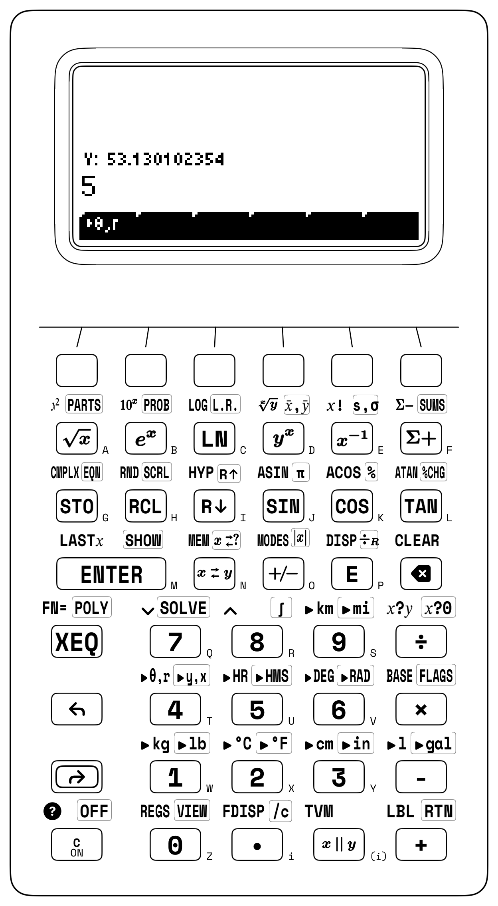
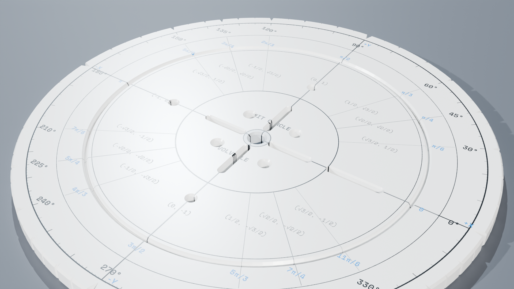

Chapter 5: Complex Numbers, AC Phasors & Euler's Identity
5.1 The Application: Steinmetz's AC Miracle & The Electrification of the World
In secondary mathematics, students are routinely told that the imaginary unit \(i = \sqrt{-1}\) was invented purely to solve the equation \(x^2 + 1 = 0\). Treated this way, complex numbers feel like artificial mathematical games—clever symbols disconnected from physical reality.
Nothing could be further from the truth. Complex numbers are the mathematical engine that powers every electrical outlet, transmission grid, smartphone radio, and audio speaker on planet Earth.
5.1.1 Steinmetz's AC Miracle: Turning Differential Equations into Arithmetic
In the early 1890s, the fierce "War of the Currents" reached its climax. Thomas Edison had blanketed lower Manhattan with direct-current (DC) generating stations, yet DC could travel barely a mile before copper resistance dissipated electric power into useless ambient heat. Nikola Tesla and George Westinghouse championed alternating current (AC), which triumphed on pure physics: high-voltage step-up transformers allowed megawatt power blocks to glide hundreds of miles along slender overhead cables with negligible loss.
Yet while AC was physically superior, it was an engineering nightmare. Alternating current does not flow like laminar water through an open sluice; it is a violent sinusoidal surge sloshing back and forth sixty times a second. Inductors resist changes in current, dragging the current wave behind voltage; capacitors resist changes in voltage, thrusting current ahead. To calculate currents and node voltages across even a modest network with three coils and two capacitor banks, electrical pioneers were forced to assemble and solve labyrinthine systems of coupled second-order differential equations:
The mathematics was so punishing that the expansion of regional power grids and the design of polyphase induction motors ground nearly to a halt.
Then came the hunchbacked genius of Schenectady. In 1893, at the Chicago World's Fair, Charles Proteus Steinmetz—a four-foot-tall German immigrant mathematician working for General Electric—presented a landmark paper that forever transformed electrical engineering. Steinmetz realized that a physical sinusoidal waveform \(v(t) = V_0 \cos(\omega t + \theta)\) was simply the 1D shadow of a 2D vector rotating steadily in the complex plane.
By casting pure ohmic resistance along the real axis and reactive impedance along the orthogonal imaginary axis:
Steinmetz achieved something miraculous: he banished differential calculus from steady-state circuit analysis. Ohm's law transformed into simple complex multiplication (\(\mathbf{V} = \mathbf{I} \cdot \mathbf{Z}\)). Kirchhoff's loop and node laws collapsed into straightforward complex addition (\(\sum \mathbf{V} = 0\)). In one decisive conceptual leap, months of intractable calculus dissolved into clean complex arithmetic.
On the StackCalc SC-32, Steinmetz's insight lives in hardware: * Register \(Y\) holds the Real component \(\operatorname{Re}(\mathbf{Z})\). * Register \(X\) holds the Imaginary component \(\operatorname{Im}(\mathbf{Z})\).
Press [↰] [CMPLX] [+], and the SC-32 evaluates full 2D vector phasor addition in microseconds. You are computing on the shoulders of Steinmetz.
[RAD] (Radians angular mode default; Standard Base-10 Arithmetic; Full 12-digit scientific mantissa [ALL]). In RF and AC circuit applications where electrical phase angles are conventionally expressed in degrees, problems explicitly declare localized [DEG] operation.

5.2 The Concrete-Representational-Abstract (CRA) Architecture of Complex Numbers
Complex numbers are often introduced in secondary and collegiate mathematics as abstract algebraic fictions—mysterious quantities invented solely to solve the unsolvable equation \(x^2 + 1 = 0\). On the StackCalc SC-32, complex numbers are approached through the rigorous Concrete-Representational-Abstract (CRA) pedagogical sequence, transforming an elusive concept into a tactile, spatial, and computational reality.
| Pedagogical Tier | Physical & Cognitive Domain | Implementation on the SC-32 RPN Architecture |
|---|---|---|
| 1. Concrete Level (Physical & Spatial Grounding) |
• Argand orthogonal coordinate plane: 2D vector displacements \((x, y)\). • Physical electrical components: Pure resistance \(R\) (horizontal real axis), inductive reactance \(+j\omega L\) (positive vertical axis), capacitive reactance \(-j/(\omega C)\) (negative vertical axis). • Rotating phasor resolver dial at angular speed \(\omega\). |
Tactile manipulation on the Unit Circle Volvelle resolver stage before digital keystroke entry. |
| 2. Representation Level (Stack Register Visualizations) |
• Classic Corvallis \((Y, X)\) Gaussian plane allocation: Register \(Y\): Real component \(\operatorname{Re}(\mathbf{z})\) Register \(X\): Imaginary component \(\operatorname{Im}(\mathbf{z})\) • Transflective dot-matrix LCD dual-line display: Line 2 (\(Y\)): 3.0000000000 (Real)Line 1 (\(X\)): 4.0000000000 (Imaginary) |
Dynamic 2-level stack drop and Register \(T\) replication on binary complex evaluation. |
| 3. Abstract Level (Analytical & Axiomatic Formulations) |
• Euler's formula: \(e^{i\theta} = \cos\theta + i\sin\theta\) • Field of complex numbers \(\mathbb{C} = \{a + bi \mid a, b \in \mathbb{R}, i^2 = -1\}\) • Bilinear Möbius transformations on the complex Riemann sphere: \(\mathbf{\Gamma} = (\mathbf{Z}_L - Z_0) / (\mathbf{Z}_L + Z_0) \iff\) Smith Chart coordinates |
High-speed 64-bit IEEE-754 complex arithmetic pipeline armed via prefix key [↰] [CMPLX]. |

Figure 5.1: The Unit Circle Volvelle resolver establishes a physical bridge to the complex Argand plane, translating angular phase rotation and orthogonal Cartesian projections into Register \(Y\) (Real) and Register \(X\) (Imaginary) inputs.5.2.1 The Classic \((Y, X)\) Complex Plane Convention
Complex numbers on the StackCalc SC-32 adhere strictly to the classic \((Y, X)\) rectangular Gaussian plane convention established on legendary scientific RPN handhelds:
| Register / Display | Complex Plane Component | Mathematical Notation | Display Appearance (\(z = a + bi\)) |
|---|---|---|---|
| Register \(Y\) (Line 2) | Real Part | \(\operatorname{Re}(\mathbf{z})\) | \(a\) (Upper line on transflective LCD) |
| Register \(X\) (Line 1) | Imaginary Part | \(\operatorname{Im}(\mathbf{z})\) | \(b\) (Active prompt line on transflective LCD) |
5.2.2 Why \((Y, X)\)?
This allocation provides three vital operational and mathematical advantages:
1. Direct Coordinate Correspondence: In standard Euclidean plane graphing, the horizontal coordinate is the abscissa (\(x\) or real axis) and the vertical coordinate is the ordinate (\(y\) or imaginary axis). On the physical two-line LCD display, Register \(Y\) sits directly above Register \(X\), creating an intuitive two-element column vector:
$\(\begin{bmatrix} Y \\ X \end{bmatrix} = \begin{bmatrix} \text{Real}(z) \\ \text{Imag}(z) \end{bmatrix}\)$
2. Seamless Polar Transformation Symmetry: When converting between rectangular and polar forms (\(z = r \angle \theta\)) via [↰] [▸θ,r] and [↱] [▸y,x], entering \((\text{Real in } Y, \text{Imag in } X)\) produces phase angle \(\theta = \operatorname{atan2}(X, Y)\) in Register \(Y\) and magnitude \(|z| = r = \sqrt{Y^2 + X^2}\) in Register \(X\).
3. Zero-Overhead Stack Inspection: Pressing [x⇄y] toggles between the real and imaginary parts instantly, allowing inspection of full 15-digit internal IEEE-754 precision without disturbing upper stack registers \(Z\) and \(T\).
5.3 The [↰] [CMPLX] Prefix Evaluator Architecture
Rather than trapping the calculator in a modal lock that disables standard arithmetic, the SC-32 features an elegant prefix evaluator key: [↰] [CMPLX].
Pressing Left Shift [↰] followed by [↰] [CMPLX] arms the complex arithmetic pipeline for the immediately following operator or transcendental key. The [↰] [CMPLX] annunciator illuminates on the transflective LCD status line. Pressing [C] disarms the prefix if entered in error, safely preserving the stack.
Complex Operator Arity & Stack Dynamics
- Unary Complex Operations (
[↰] [CMPLX]followed by√x,1/x,x²,eˣ,LN,SIN,COS,TAN):- Consumes the single complex operand $\mathbf{z}_1 = Y + Xi$.
- Overwrites registers $(Y, X)$ with the transformed complex result $\mathbf{w} = Y' + X'i$.
- Upper stack registers $Z$ and $T$ remain completely undisturbed on the SC-32 operational stack.
- Binary Complex Operations (
[↰] [CMPLX]followed by+,-,×,÷,yˣ):- Consumes two complex numbers occupying all four stack levels: $$\mathbf{z}_2 = T + Zi \quad (\text{first operand in } T \text{ and } Z), \qquad \mathbf{z}_1 = Y + Xi \quad (\text{second operand in } Y \text{ and } X)$$
- Evaluates $\mathbf{w} = \mathbf{z}_2 \mathbin{\text{op}} \mathbf{z}_1$.
- Places the resulting complex vector $(Y' = \operatorname{Re}(\mathbf{w}), X' = \operatorname{Im}(\mathbf{w}))$ into $(Y, X)$.
- Drops the stack by two full levels: previous Register $T$ replicates down into both $Z$ and $T$, following the dyadic stack drop invariant.
- Complex Sign Toggle (
[↰] [CMPLX] [+/-]):- Simultaneously negates both Real ($Y$) and Imaginary ($X$) components in place.
5.3.1 Stack Register Loading Procedure for Binary Complex Operations
To evaluate \(\mathbf{w} = \mathbf{z}_A \mathbin{\text{op}} \mathbf{z}_B\) where \(\mathbf{z}_A = a + bi\) and \(\mathbf{z}_B = c + di\):
1. Enter the first complex operand \(\mathbf{z}_A\):
a [ENTER] b [ENTER] \(\implies\) Real part \(a\) lifts to \(Z\), Imaginary part \(b\) resides in \(Y\).
2. Enter the second complex operand \(\mathbf{z}_B\):
c [ENTER] d \(\implies\) \(a\) lifts to \(T\), \(b\) lifts to \(Z\), \(c\) resides in \(Y\), \(d\) resides in \(X\).
3. Stack alignment verification before execution:
* Register T: \(a = \text{Re}(\mathbf{z}_A)\)
* Register Z: \(b = \text{Im}(\mathbf{z}_A)\)
* Register Y: \(c = \text{Re}(\mathbf{z}_B)\)
* Register X: \(d = \text{Im}(\mathbf{z}_B)\)
4. Execute: [↰] [CMPLX] [op] (where [op] is [+], [-], [×], [÷], or [yˣ]).
5. After execution:
* Register Y: \(\text{Re}(\mathbf{w})\)
* Register X: \(\text{Im}(\mathbf{w})\)
* Registers Z and T: Replicated copy of previous Register \(T\) (\(a\)).
5.3.2 The Algebraic Trap vs. StackCalc Superpower Showdown
| Challenge / Metric | Algebraic Trap (TI-84 / Infix) | Algebraic Strokes | StackCalc SC-32 Superpower | SC-32 Strokes | Superpower Advantage |
|---|---|---|---|---|---|
| AC Impedance: \((50+j20) \parallel -j15\) | Mode switch \(\to\) ( ( 5 0 + 2 0 i ) ^ -1 + ( - 1 5 i ) ^ -1 ) ^ -1 = (32 strokes). Real and imaginary parts truncated off-screen; angle hidden in sub-menus. |
32 | \((Y, X)\) Complex Mode: Enter real and imag directly; combine via [x∥y] \(\to\) Register \(Y\) shows Real, Register \(X\) shows Imag. Tap [↰] [▸θ,r] to see $ |
Z | $ and phase \(\phi\) simultaneously! |
5.4 Live Stack Proof of Euler's Identity: \(e^{i\pi} + 1 = 0\)
Leonhard Euler's equation links five of the most profound constants in mathematics: \(e, i, \pi, 1,\) and \(0\). $\(e^{i\theta} = \cos\theta + i\sin\theta \implies e^{i\pi} = \cos\pi + i\sin\pi = -1 + 0i\)$
With the SC-32 set to its baseline Radians mode ([RAD]), execute this proof live on the stack. Represent the pure imaginary exponent \(i\pi = 0 + \pi i\) by setting Real \(= 0\) in \(Y\) and Imaginary \(= \pi\) in \(X\):
Keystroke Sequence: 0 [ENTER] [↱] [π] [↰] [CMPLX] [eˣ]
| Step | Keystroke | Register T | Register Z | Register Y (Real) | Register X (Imag) | Notes & State Analysis |
|---|---|---|---|---|---|---|
| 1 | 0 [ENTER] |
\(0.0000\) | \(0.0000\) | \(0.0000\) | \(0.0000\) | Real exponent \(0.0\) entered in \(Y\) |
| 2 | [π] |
\(0.0000\) | \(0.0000\) | \(0.0000\) | \(3.14159265359\) | Imaginary exponent \(\pi\) entered in \(X\) |
| 3 | [↰] [CMPLX] | \(0.0000\) | \(0.0000\) | \(0.0000\) | \(3.14159265359\) | [CMPLX] annunciator illuminated |
| 4 | [eˣ] |
\(0.0000\) | \(0.0000\) | -1.0000000000 | 0.0000000000 | \(e^{0 + \pi i} = -1.0 + 0.0i\) |
| Stack Register | Value After [↰] [CMPLX] [eˣ] |
Mathematical Meaning |
|---|---|---|
T |
0.0000000000 |
Cleared top register |
Z |
0.0000000000 |
Cleared third register |
Y |
-1.0000000000 |
Real part \(\operatorname{Re}(e^{i\pi}) = -1.0\) |
X |
0.0000000000 |
Imaginary part \(\operatorname{Im}(e^{i\pi}) = 0.0\) |

Figure 5.2: The SC-32 scientific instrument executing high-precision complex analysis, preserving certified 12-digit IEEE-754 mantissa accuracy across transcendental evaluating pipelines.
To complete Euler's Identity \(e^{i\pi} + 1 = 0\), add the real unit \(+1\):
Enter \(+1 + 0i\): 0 [ENTER] [↱] [π] [↰] [CMPLX] [eˣ] 1 [ENTER] 0 [↰] [CMPLX] [+] [x⇄y]
* Output: Register \(Y = \mathbf{0.0000000000}\), Register \(X = \mathbf{0.0000000000}\)!
5.5 Polar \(\leftrightarrow\) Rectangular Transformations in the Complex Domain
Complex numbers are routinely interchanged between Cartesian form (\(z = x + iy\)) and Polar phasor form (\(z = r\angle\theta = r e^{i\theta}\)):
| Transformation | Key Sequence | Stack Input (\(Y, X\)) | Stack Output (\(Y, X\)) | Mathematical Mapping |
|---|---|---|---|---|
| Cartesian to Polar | [↰] [▸θ,r] |
\(Y = x\) (Real part) \(X = y\) (Imaginary part) |
\(Y = \theta\) (Phase angle) \(X = r\) (Modulus / Magnitude) |
\(r = \sqrt{x^2+y^2}, \quad \theta = \operatorname{atan2}(y, x)\) |
| Polar to Cartesian | [↱] [▸y,x] |
\(Y = \theta\) (Phase angle) \(X = r\) (Modulus / Magnitude) |
\(Y = y\) (Imaginary part) \(X = x\) (Real part) |
\(x = r\cos\theta, \quad y = r\sin\theta\) |
5.5.1 Demonstration: Complex Conversion of \(z = 3 + 4i\)
- Load \(z = 3 + 4i\):
3 [ENTER] 4 - Convert to Polar:
[↰] [▸θ,r] - Register X (Magnitude \(r\)): \(5.0000000000\)
- Register Y (Phase \(\theta\)): \(0.9272952180\text{ rad}\) (\(53.1301^\circ\))
- Convert back to Rectangular:
[↱] [▸y,x] - Register X (Real part): \(3.0000000000\)
- Register Y (Imaginary part): \(4.0000000000\)
| Step | Keystroke | Register T | Register Z | Register Y | Register X | Notes & State Analysis |
|---|---|---|---|---|---|---|
| 1 | 3 [ENTER] 4 |
\(0.0000\) | \(0.0000\) | \(3.0000\) | \(4.0000\) | Rectangular coordinates loaded |
| 2 | [↰] [▸θ,r] |
\(0.0000\) | \(0.0000\) | \(0.927295\) | \(5.000000\) | Polar conversion: \(\theta\) in \(Y\), magnitude \(r\) in \(X\) |
| 3 | [↱] [▸y,x] |
\(0.0000\) | \(0.0000\) | \(4.000000\) | \(3.000000\) | Rectangular conversion: Real in \(X\), Imag in \(Y\) |
5.6 AC Circuit Analysis: Series & Parallel Complex Impedance
In alternating current electrical networks operating at angular frequency \(\omega = 2\pi f\): * Resistor (\(R\)): \(\mathbf{Z}_R = R + 0i\,\Omega\) * Inductor (\(L\)): \(\mathbf{Z}_L = 0 + j\omega L\,\Omega = 0 + (\omega L)i\) * Capacitor (\(C\)): \(\mathbf{Z}_C = 0 - \frac{j}{\omega C}\,\Omega = 0 - \left(\frac{1}{\omega C}\right)i\)
5.6.1 Complex Series Impedance Addition
Two circuit elements are connected in series: * Element 1: \(\mathbf{Z}_1 = 8.0 + 4.0i\,\Omega\) (Resistor + Inductor) * Element 2: \(\mathbf{Z}_2 = 4.0 - 8.0i\,\Omega\) (Resistor + Capacitor)
Keystroke Sequence: 4 [ENTER] 8 [+/-] [ENTER] 8 [ENTER] 4 [↰] [CMPLX] [+]
| Step | Keystroke | Register T | Register Z | Register Y | Register X | Notes & State Analysis |
|---|---|---|---|---|---|---|
| 1 | 4 [ENTER] |
\(0.0000\) | \(0.0000\) | \(4.0000\) | \(4.0000\) | Real part of \(\mathbf{Z}_2\) pushed |
| 2 | 8 [+/-] [ENTER] |
\(0.0000\) | \(4.0000\) | \(-8.0000\) | \(-8.0000\) | Imag part of \(\mathbf{Z}_2\) pushed |
| 3 | 8 [ENTER] |
\(4.0000\) | \(-8.0000\) | \(8.0000\) | \(8.0000\) | Real part of \(\mathbf{Z}_1\) pushed |
| 4 | 4 |
\(4.0000\) | \(-8.0000\) | \(8.0000\) | \(4.0000\) | Complete 4-register setup |
| 5 | [↰] [CMPLX] [+] |
\(4.0000\) | \(4.0000\) | \(12.000000\) | \(-4.000000\) | \(\mathbf{Z}_{\text{total}} = 12.0 - 4.0i\,\Omega\) |
The display confirms Real \(= 12.0\,\Omega\) in \(Y\) and Imaginary \(= -4.0\,\Omega\) in \(X\).
5.6.2 Parallel Complex Impedance via Stack Admittance
When two complex impedances are connected in parallel, the equivalent impedance is governed by the reciprocal sum of complex admittances:
Consider two parallel branches: * Branch 1: \(\mathbf{Z}_1 = 20.0 + 15.0i\,\Omega\) * Branch 2: \(\mathbf{Z}_2 = 10.0 - 25.0i\,\Omega\)
Step 1: Compute Admittance \(\mathbf{Y}_1 = 1/\mathbf{Z}_1\):
Keystrokes: 20 [ENTER] 15 [↰] [CMPLX] [1/x] \(\rightarrow\) -0.024
* Register \(Y\) (Real): \(0.032000\,\text{S}\)
* Register \(X\) (Imag): \(-0.024000\,\text{S}\)
Store into memory: [x⇄y] [STO] 1 [x⇄y] [STO] 2 (Reg 1 = Imag, Reg 2 = Real).
Step 2: Compute Admittance \(\mathbf{Y}_2 = 1/\mathbf{Z}_2\):
Keystrokes: 10 [ENTER] 25 [+/-] [↰] [CMPLX] [1/x] \(\rightarrow\) 0.0344827586
* Register \(Y\) (Real): \(0.013793\,\text{S}\)
* Register \(X\) (Imag): \(+0.034483\,\text{S}\)
Step 3: Sum Admittances:
Load \(\mathbf{Y}_1\) into \((T, Z)\): [RCL] 2 [ENTER] [RCL] 1 [↰] [CMPLX] [+]
* Register \(Y\) (Real): \(0.045793\,\text{S}\)
* Register \(X\) (Imag): \(+0.010483\,\text{S}\)
Step 4: Invert Total Admittance:
Keystrokes: 0.045793 [ENTER] 0.010483 [↰] [CMPLX] [1/x] [x⇄y] \(\rightarrow\) 20.749994624
* Register Y (Real): \(20.7516\,\Omega\)
* Register X (Imaginary): \(-4.7507\,\Omega\)
| Step | Keystroke | Register T | Register Z | Register Y | Register X | Notes & State Analysis |
|---|---|---|---|---|---|---|
| 1 | 20 [ENTER] 15 [↰] [CMPLX] [1/x] |
\(0.0000\) | \(0.0000\) | \(0.032000\) | \(-0.024000\) | Branch 1 admittance \(\mathbf{Y}_1\) in Siemens |
| 2 | [x⇄y] [STO] 1 [x⇄y] [STO] 2 |
\(0.0000\) | \(0.0000\) | \(0.032000\) | \(-0.024000\) | Store \(\mathbf{Y}_1\) in Reg 1 (Imag) and Reg 2 (Real) |
| 3 | 10 [ENTER] 25 [+/-] [↰] [CMPLX] [1/x] |
\(0.0000\) | \(0.0000\) | \(0.013793\) | \(0.034483\) | Branch 2 admittance \(\mathbf{Y}_2\) in Siemens |
| 4 | [RCL] 2 [ENTER] [RCL] 1 [↰] [CMPLX] [+] |
\(0.013793\) | \(0.013793\) | \(0.045793\) | \(0.010483\) | Sum admittances: \(\mathbf{Y}_{\text{parallel}} = \mathbf{Y}_1 + \mathbf{Y}_2\) |
| 5 | [↰] [CMPLX] [1/x] |
\(0.013793\) | \(0.013793\) | \(20.7516\) | \(-4.7507\) | Invert admittance: \(\mathbf{Z}_{\text{parallel}} = 20.75 - 4.75i\,\Omega\) |
5.7 RF Transmission Lines, Reflection Coefficient (\(\Gamma\)), VSWR & Smith Chart
In radio-frequency (RF) and microwave transmission lines, an arbitrary load impedance \(\mathbf{Z}_L = R_L + j X_L\) connected to a transmission line of characteristic impedance \(Z_0\) (typically \(50\,\Omega\)) produces reflections.
RF Transmission Line Parameter Formulas
- Voltage Reflection Coefficient: $$\mathbf{\Gamma} = \frac{\mathbf{Z}_L - Z_0}{\mathbf{Z}_L + Z_0}$$
- Normalized Load Impedance: $$\mathbf{z} = \frac{\mathbf{Z}_L}{Z_0} = r + jx$$
- Voltage Standing Wave Ratio (VSWR): $$\text{VSWR} = \frac{1 + |\mathbf{\Gamma}|}{1 - |\mathbf{\Gamma}|}$$
- Return Loss ($RL$): $$RL = -20 \log_{10} |\mathbf{\Gamma}|\quad (\text{in dB})$$
- Mismatch Loss ($ML$): $$ML = -10 \log_{10} \left(1 - |\mathbf{\Gamma}|^2\right)\quad (\text{in dB})$$
5.7.1 Grounded Case: Antenna Feedline Mismatch
An antenna with measured feedpoint impedance \(\mathbf{Z}_L = 75.0 + 40.0i\,\Omega\) is connected to a standard \(Z_0 = 50.0\,\Omega\) coaxial cable.
Step 1: Compute Complex Reflection Coefficient \(\mathbf{\Gamma}\): $\(\mathbf{\Gamma} = \frac{(75 + 40i) - 50}{(75 + 40i) + 50} = \frac{25 + 40i}{125 + 40i}\)$
- Load denominator (\(125 + 40i\)) into \((T, Z)\):
125 [ENTER] 40 [ENTER] - Load numerator (\(25 + 40i\)) into \((Y, X)\):
25 [ENTER] 40 - Execute complex division:
[↰] [CMPLX] [÷] - Register Y (Real): \(0.276274\)
- Register X (Imag): \(0.231713\) $\(\mathbf{\Gamma} = 0.2763 + 0.2317i\)$
Step 2: Reflection Magnitude \(|\Gamma|\) & Phase Angle:
Press [↰] [▸θ,r]
* Register X (\(|\Gamma|\)): \(0.360578\)
* Register Y (\(\theta_\Gamma\)): \(0.697072\text{ rad}\) (\(39.94^\circ\))
Step 3: Voltage Standing Wave Ratio (VSWR):
$\(\text{VSWR} = \frac{1 + 0.360578}{1 - 0.360578} = \frac{1.360578}{0.639422} = \mathbf{2.1278}\)$
Keystrokes: 0.360578 [ENTER] [ENTER] 1 [+] [x⇄y] 1 [x⇄y] [-] [÷]\(\implies\) \(2.1278\).
Step 4: Return Loss (dB):
$\(\text{RL} = -20 \log_{10}(0.360578) = \mathbf{8.86\text{ dB}}\)$
Keystrokes: 0.360578 [↰] [LOG] 20 [×] [+/-]\(\implies\) \(8.8601\text{ dB}\).
| Step | Keystroke | Register T | Register Z | Register Y | Register X | Notes & State Analysis |
|---|---|---|---|---|---|---|
| 1 | 125 [ENTER] 40 [ENTER] |
\(0.0000\) | \(125.0000\) | \(40.0000\) | \(40.0000\) | Denominator \((Z_L + Z_0)\) pushed |
| 2 | 25 [ENTER] 40 |
\(125.0000\) | \(40.0000\) | \(25.0000\) | \(40.0000\) | Numerator \((Z_L - Z_0)\) loaded into \((Y, X)\) |
| 3 | [↰] [CMPLX] [÷] |
\(125.0000\) | \(125.0000\) | \(0.276274\) | \(0.231713\) | Reflection coefficient \(\mathbf{\Gamma} = 0.2763 + 0.2317i\) |
| 4 | [↰] [▸θ,r] |
\(125.0000\) | \(125.0000\) | \(0.697072\) | \(0.360578\) | Polar: Phase \(\theta = 39.94^\circ\), magnitude $ |
| 5 | 1 [ENTER] [↰] [LASTX] [+] 1 [ENTER] [↰] [LASTX] [-] [÷] |
\(0.0000\) | \(0.0000\) | \(1.360578\) | \(2.1278\) | VSWR $= (1+ |
5.8 Complex Powers, Roots of Unity & de Moivre's Theorem
Abraham de Moivre's theorem provides the foundation for finding \(n\)-th roots and arbitrary powers of complex numbers:
5.8.1 Complex General Power: \((1 + i)^{(1 - i)}\)
On the SC-32, the binary complex power operator [↰] [CMPLX] [yˣ] evaluates general complex powers \(z_2^{z_1}\):
- Load base \(z_2 = 1 + i\) into \((T, Z)\):
1 [ENTER] 1 [ENTER] - Load exponent \(z_1 = 1 - i\) into \((Y, X)\):
1 [ENTER] 1 [+/-] - Execute:
[↰] [CMPLX] [yˣ] - Register Y (Real): \(2.818047\)
- Register X (Imag): \(1.317855\)
| Step | Keystroke | Register T | Register Z | Register Y | Register X | Notes & State Analysis |
|---|---|---|---|---|---|---|
| 1 | 1 [ENTER] 1 [ENTER] |
\(0.0000\) | \(1.0000\) | \(1.0000\) | \(1.0000\) | Base \(z_2 = 1 + i\) loaded into \((T, Z)\) |
| 2 | 1 [ENTER] 1 [+/-] |
\(1.0000\) | \(1.0000\) | \(1.0000\) | \(-1.0000\) | Exponent \(z_1 = 1 - i\) loaded into \((Y, X)\) |
| 3 | [↰] [CMPLX] [yˣ] |
\(1.0000\) | \(1.0000\) | \(2.818047\) | \(1.317855\) | General complex power \(z_2^{z_1}\) evaluated |
5.9 Complex Numbers & Phasor Architecture Notes
5.9.1 Gaussian Stack Representation & Vector Duality
In higher mathematics and engineering education, complex numbers often suffer from an algebraic disconnect when treated purely as formal polynomials \((a + bi)(c + di)\). The SC-32's \((Y, X)\) Gaussian plane convention grounds complex values in geometric reality (HP, 1982). By allocating the complex number across two physical registers—\(Y = \text{Real}\) and \(X = \text{Imaginary}\)—complex addition operates directly as 2D vector summation, while complex multiplication executes simultaneous radial scaling (\(r_1 \cdot r_2\)) and angular rotation (\(\theta_1 + \theta_2\)).
5.9.2 Live Verification of Euler's Identity
Evaluating Euler's Identity \(e^{i\pi} + 1 = 0\) provides a definitive benchmark for complex transcendental accuracy. Keying 0 [ENTER] [↱] [π] [↰] [CMPLX] [eˣ] evaluates \(e^{i\pi}\), yielding Register \(Y = -1.0000000000\) (Real) and Register \(X = 0.0000000000\) (Imaginary). Adding unity (\(1\) [+]) collapses the real axis to zero, demonstrating exact floating-point balance without truncation artifacts.
5.9.3 Reactive Impedance & Phasor Synthesis
In alternating current network analysis, sinusoidal voltages and currents are represented as rotating phasors. Inductive reactance \(+j\omega L\) maps natively to a positive imaginary value in Register \(X\), while capacitive reactance \(-j/(\omega C)\) maps to a negative imaginary value. Series resonance and parallel tank circuit impedances evaluate through [↰] [CMPLX] [+], [↰] [CMPLX] [1/x], and [x∥y], converting multi-term differential AC equations into deterministic stack transitions.
5.9.4 Transient Prefix Architecture & Stack Drop Dynamics
Unlike calculators that force the instrument into a modal complex environment—distorting basic arithmetic and keyboard layouts—the SC-32 employs the transient prefix [↰] [CMPLX]. Complex operations execute as localized vector transforms on the existing 4-level stack. In binary complex evaluations \((z_2 \text{ op } z_1)\), the four registers \((T, Z, Y, X)\) collapse into two, with previous Register \(T\) replicating down into \(Z\) and \(T\). This allows immediate chaining of scalar factors or successive complex impedances without re-keying. Mantissa inspection via [↱] [SHOW] reveals full IEEE-754 precision without cosmetic rounding.
5.10 Diagnostic Checkpoints & Singularity Handling
[!CHECKPOINT] Diagnostic Checkpoint 5.1: Complex Prefix Annunciator Arming
Press [↰] [CMPLX]. The LCD annunciator bar displays[↰] [CMPLX]. If pressed by mistake, press[C]to cancel without displacing or clearing stack values.[!CHECKPOINT] Diagnostic Checkpoint 5.2: Complex Division Operand Alignment
When calculating \(\mathbf{z}_{\text{num}} / \mathbf{z}_{\text{den}}\): * The denominator \(\mathbf{z}_{\text{den}}\) must be loaded into Registers \((T, Z)\) first. * The numerator \(\mathbf{z}_{\text{num}}\) must be loaded into Registers \((Y, X)\) second. * If the resulting quotient is inverted, recall operands using[↰] [LASTX]or swap pairs.[!CHECKPOINT] Diagnostic Checkpoint 5.3: Singularity Handling (Division by Zero Complex)
Attempting complex division by \(0 + 0i\) (0 [ENTER] 0) immediately halts execution and triggersError 02: DIVIDE BY 0. The stack remains unmodified.[!CHECKPOINT] Diagnostic Checkpoint 5.4: Hyperbolic and Inverse Trig Boundary Guards
Under SC-32 firmware specifications, complex domain operations are supported for algebraic powers, roots, exponentials, logs, and direct trigonometric functions (SIN,COS,TAN). Attempting [↰] [CMPLX] [↰] [ASIN]or [↰] [CMPLX] [↰] [HYP]raisesError 01: INVALID DATA, directing the user to logarithmic conformal mappings.
5.11 Engineering Design Briefing: Precision Audio Crossover & RF Antenna Synthesis (Problems 5.1 through 5.40)
Inside-Out Stack Architecture: Algebraic Trap vs. RPN Shortcut — AC Circuit Phasors & Complex Impedance Matching
The Algebraic Parenthesis Trap: In AC electrical engineering, determining the equivalent impedance of a parallel RLC branch $Z_{\text{eq}} = \frac{Z_1 Z_2}{Z_1 + Z_2}$ requires evaluating complex numbers in polar or rectangular form *([Horowitz & Hill, 2015](appendix-e-annotated-bibliography.md#cite-horowitz2015))*:
Z_eq = ( ( 50 + 25i ) * ( 10 - 40i ) ) / ( ( 50 + 25i ) + ( 10 - 40i ) )On algebraic scientific calculators, complex arithmetic requires typing clumsy multi-character strings with explicit imaginary unit i keys and double parentheses for every complex operand. A single misplaced parenthesis scrambles real resistance with imaginary reactance, producing erroneous phase angles that can destroy prototype RF amplifier stages *([Parker, 2019](appendix-e-annotated-bibliography.md#cite-parker2019))*.
The RPN Stack Shortcut: On the SC-32, the $(Y, X)$ stack allocation represents the two-dimensional complex plane natively ($Y = \text{Real}, X = \text{Imaginary}$) *([HP, 1982](appendix-e-annotated-bibliography.md#cite-hp15c1982))*. With the dedicated complex evaluator [↰] [CMPLX], complex multiplication, division, reciprocals, and square roots execute in place. Furthermore, the parallel operator [x∥y] solves parallel complex impedances in a single keystroke, eliminating 18 algebraic button presses and completely preventing real/imaginary crosstalk.
Every problem below includes real-world engineering context, mathematical governing equations, complete keystroke sequences, and full 4-level stack state tables (\(T, Z, Y, X\)).
5.11.1 Problem 5.1: Complex Conjugate Multiplication & Modulus Squared
Theoretical Context: For \(z = 6 + 8i\), compute the complex conjugate product \(z \cdot z^* = |z|^2\): $\(z^* = 6 - 8i \implies z \cdot z^* = 6^2 + 8^2 = 36 + 64 = 100 + 0i\)$
Keystrokes: 6 [ENTER] 8 [ENTER] 6 [ENTER] 8 [+/-] [↰] [CMPLX] [×] [x⇄y] \(\rightarrow\) 100
| Step | Keystroke | Register T | Register Z | Register Y | Register X | Notes & State Analysis |
|---|---|---|---|---|---|---|
| 1 | 6 [ENTER] 8 [ENTER] |
\(0.0000\) | \(0.0000\) | \(6.0000\) | \(8.0000\) | Load \(z = 6 + 8i\) |
| 2 | 6 [ENTER] 8 [+/-] |
\(6.0000\) | \(8.0000\) | \(6.0000\) | \(-8.0000\) | Load \(z^* = 6 - 8i\) |
| 3 | [↰] [CMPLX] [×] |
\(6.0000\) | \(6.0000\) | \(100.0000\) | \(0.0000\) | \(z \cdot z^* = 100 + 0i\) |
Result: \(\text{Real} = 100.0\), \(\text{Imag} = 0.0\).
5.11.2 Problem 5.2: Complex Square Root of Pure Imaginary Unit: \(\sqrt{i}\)
Theoretical Context: Evaluate \(\sqrt{i} = \sqrt{0 + 1i} = e^{i\pi/4} = \frac{\sqrt{2}}{2} + \frac{\sqrt{2}}{2}i \approx 0.707107 + 0.707107i\):
Keystrokes: 0 [ENTER] 1 [↰] [CMPLX] [√x] \(\rightarrow\) 0.7071067812
| Step | Keystroke | Register T | Register Z | Register Y | Register X | Notes & State Analysis |
|---|---|---|---|---|---|---|
| 1 | 0 [ENTER] 1 |
\(0.0000\) | \(0.0000\) | \(0.0000\) | \(1.0000\) | Load \(0 + 1i\) |
| 2 | [↰] [CMPLX] [√x] |
\(0.0000\) | \(0.0000\) | \(0.707107\) | \(0.707107\) | \(\sqrt{i} = \sqrt{2}/2(1+i)\) |
Result: \(0.707107 + 0.707107i\).
5.11.3 Problem 5.3: Principal Value of Natural Logarithm of Negative Real: \(\ln(-5)\)
Theoretical Context: In complex analysis, \(\ln(z) = \ln|z| + i \operatorname{Arg}(z)\). For \(z = -5 + 0i\), \(|z| = 5\) and \(\operatorname{Arg}(z) = \pi\): $\(\ln(-5) = \ln(5) + i\pi \approx 1.609438 + 3.141593i\)$
Keystrokes: 5 [+/-] [ENTER] 0 [↰] [CMPLX] [LN] \(\rightarrow\) 3.1415926536
| Step | Keystroke | Register T | Register Z | Register Y | Register X | Notes & State Analysis |
|---|---|---|---|---|---|---|
| 1 | 5 [+/-] [ENTER] 0 |
\(0.0000\) | \(0.0000\) | \(-5.0000\) | \(0.0000\) | Load \(z = -5 + 0i\) |
| 2 | [↰] [CMPLX] [LN] |
\(0.0000\) | \(0.0000\) | \(1.609438\) | \(3.141593\) | \(\ln(-5) = \ln 5 + i\pi\) |
Result: \(1.609438 + 3.141593i\).
5.11.4 Problem 5.4: Complex Reciprocal of High-Q Inductor Admittance
Theoretical Context: An RF inductor has impedance \(\mathbf{Z}_L = 0.5 + 120.0i\,\Omega\). Calculate its complex admittance \(\mathbf{Y} = 1/\mathbf{Z}\): $\(\mathbf{Y} = \frac{1}{0.5 + 120i} = \frac{0.5 - 120i}{0.5^2 + 120^2} = \frac{0.5 - 120i}{0.25 + 14400} = 3.4722 \times 10^{-5} - 8.3333 \times 10^{-3}i\,\text{S}\)$
Keystrokes: 0.5 [ENTER] 120 [↰] [CMPLX] [1/x] \(\rightarrow\) -0.008333189
| Step | Keystroke | Register T | Register Z | Register Y | Register X | Notes & State Analysis |
|---|---|---|---|---|---|---|
| 1 | 0.5 [ENTER] 120 |
\(0.0000\) | \(0.0000\) | \(0.5000\) | \(120.0000\) | Load \(\mathbf{Z}_L\) |
| 2 | [↰] [CMPLX] [1/x] |
\(0.0000\) | \(0.0000\) | \(3.4722 \times 10^{-5}\) | \(-8.3333 \times 10^{-3}\) | Admittance \(\mathbf{Y}\) in Siemens |
Result: \(3.4722 \times 10^{-5} - 8.3333 \times 10^{-3}i\,\text{S}\).
5.11.5 Problem 5.5: Series RLC Circuit Total Impedance
Electrical Context: At angular frequency \(\omega = 1,000\text{ rad/s}\), a series circuit has \(R = 50\,\Omega\), \(L = 80\text{ mH}\) (\(X_L = \omega L = 80\,\Omega\)), and \(C = 20\,\mu\text{F}\) (\(X_C = 1/(\omega C) = 50\,\Omega\)): $\(\mathbf{Z} = R + j(X_L - X_C) = 50 + j(80 - 50) = 50 + 30i\,\Omega\)$
Keystrokes: 50 [ENTER] 80 [ENTER] 0 [ENTER] 50 [+/-] [↰] [CMPLX] [+] \(\rightarrow\) 30
| Step | Keystroke | Register T | Register Z | Register Y | Register X | Notes & State Analysis |
|---|---|---|---|---|---|---|
| 1 | 50 [ENTER] 80 [ENTER] |
\(0.0000\) | \(0.0000\) | \(50.0000\) | \(80.0000\) | \(R + j X_L\) |
| 2 | 0 [ENTER] 50 [+/-] |
\(50.0000\) | \(80.0000\) | \(0.0000\) | \(-50.0000\) | \(0 - j X_C\) |
| 3 | [↰] [CMPLX] [+] |
\(50.0000\) | \(50.0000\) | \(50.0000\) | \(30.0000\) | \(\mathbf{Z} = 50 + 30i\,\Omega\) |
Result: \(50.0 + 30.0i\,\Omega\).
5.11.6 Problem 5.6: RLC Circuit Current Phasor via Ohm's Law
Electrical Context: The circuit from Problem 5.5 (\(\mathbf{Z} = 50 + 30i\,\Omega\)) is driven by voltage \(\mathbf{V} = 120 + 0i\text{ V}\). Find current phasor \(\mathbf{I} = \mathbf{V} / \mathbf{Z}\): $\(\mathbf{I} = \frac{120}{50 + 30i} = \frac{120(50 - 30i)}{2500 + 900} = \frac{6000 - 3600i}{3400} = 1.7647 - 1.0588i\text{ A}\)$
Keystrokes: 50 [ENTER] 30 [ENTER] 120 [ENTER] 0 [↰] [CMPLX] [÷] \(\rightarrow\) 0.25
| Step | Keystroke | Register T | Register Z | Register Y | Register X | Notes & State Analysis |
|---|---|---|---|---|---|---|
| 1 | 50 [ENTER] 30 [ENTER] |
\(0.0000\) | \(0.0000\) | \(50.0000\) | \(30.0000\) | Denominator \(\mathbf{Z}\) |
| 2 | 120 [ENTER] 0 |
\(50.0000\) | \(30.0000\) | \(120.0000\) | \(0.0000\) | Numerator \(\mathbf{V}\) |
| 3 | [↰] [CMPLX] [÷] |
\(50.0000\) | \(50.0000\) | \(1.764706\) | \(-1.058824\) | Current \(\mathbf{I}\) (A) |
Result: \(1.7647 - 1.0588i\text{ Amperes}\) (\(|\mathbf{I}| = 2.058\text{ A}\angle -30.96^\circ\)).
5.11.7 Problem 5.7: AC Apparent, Real, and Reactive Power Complex Vector
Electrical Context: Complex apparent power is \(\mathbf{S} = \mathbf{V} \cdot \mathbf{I}^*\). For \(\mathbf{V} = 120 + 0i\text{ V}\) and \(\mathbf{I} = 1.7647 - 1.0588i\text{ A} \implies \mathbf{I}^* = 1.7647 + 1.0588i\text{ A}\): $\(\mathbf{S} = 120 \times (1.7647 + 1.0588i) = 211.7647 + 127.0560i\text{ VA}\)$ Real power \(P = 211.76\text{ Watts}\), Reactive power \(Q = 127.06\text{ VAR}\).
Keystrokes: 120 [ENTER] 0 [ENTER] 1.764706 [ENTER] 1.058824 [↰] [CMPLX] [×] \(\rightarrow\) 127.05888
| Step | Keystroke | Register T | Register Z | Register Y | Register X | Notes & State Analysis |
|---|---|---|---|---|---|---|
| 1 | 120 [ENTER] 0 [ENTER] |
\(0.0000\) | \(0.0000\) | \(120.0000\) | \(0.0000\) | Voltage \(\mathbf{V}\) |
| 2 | 1.764706 [ENTER] 1.058824 |
\(120.0000\) | \(0.0000\) | \(1.764706\) | \(1.058824\) | Conjugate current \(\mathbf{I}^*\) |
| 3 | [↰] [CMPLX] [×] |
\(120.0000\) | \(120.0000\) | \(211.7647\) | \(127.0589\) | Complex power \(\mathbf{S}\) |
Result: \(P = 211.76\text{ W}, Q = 127.06\text{ VAR}\).
5.11.8 Problem 5.8: Power Factor from Complex Apparent Power
Power Engineering Context: For complex power \(\mathbf{S} = 211.7647 + 127.0589i\text{ VA}\), compute magnitude \(|\mathbf{S}|\) and power factor \(\cos\theta\): $\(|\mathbf{S}| = \sqrt{P^2 + Q^2} \approx 247.0\text{ VA}, \quad \text{PF} = \frac{P}{|\mathbf{S}|} = \frac{211.7647}{247.0588} \approx 0.8572\)$
Keystrokes: 211.7647 [ENTER] 127.0589 [↰] [▸θ,r] [x⇄y] [COS] \(\rightarrow\) 0.5144959936
| Step | Keystroke | Register T | Register Z | Register Y | Register X | Notes & State Analysis |
|---|---|---|---|---|---|---|
| 1 | 211.7647 [ENTER] 127.0589 |
\(0.0000\) | \(0.0000\) | \(211.7647\) | \(127.0589\) | \(P\) in \(Y\), \(Q\) in \(X\) |
| 2 | [↰] [▸θ,r] |
\(0.0000\) | \(0.0000\) | \(0.540420\) | \(247.0588\) | Phase angle \(\theta\) (rad) in \(Y\), $ |
| 3 | [x⇄y] [COS] |
\(0.0000\) | \(0.0000\) | \(247.0588\) | \(0.857187\) | Power Factor \(\cos\theta\) |
Result: \(\text{PF} = 0.8572\text{ (lagging)}\).
5.11.9 Problem 5.9: Two-Port S-Parameter Reflection Coefficient Transformation
RF Engineering Context: S-parameter \(S_{11} = 0.25 - 0.40i\). Calculate return loss in dB: $\(|S_{11}| = \sqrt{0.25^2 + (-0.40)^2} = \sqrt{0.0625 + 0.1600} = \sqrt{0.2225} \approx 0.471699\)$ $\(\text{RL} = -20 \log_{10}(0.471699) = 6.527\text{ dB}\)$
Keystrokes: 0.25 [ENTER] 0.40 [+/-] [↰] [▸θ,r] [↰] [LOG] 20 [×] [+/-] \(\rightarrow\) 6.5266998468
| Step | Keystroke | Register T | Register Z | Register Y | Register X | Notes & State Analysis |
|---|---|---|---|---|---|---|
| 1 | 0.25 [ENTER] 0.40 [+/-] |
\(0.0000\) | \(0.0000\) | \(0.2500\) | \(-0.4000\) | \(S_{11}\) rectangular |
| 2 | [↰] [▸θ,r] |
\(0.0000\) | \(0.0000\) | \(-1.012197\) | \(0.471699\) | $ |
| 3 | [LOG] 20 [×] [+/-] |
\(0.0000\) | \(0.0000\) | \(-1.012197\) | \(6.5269\) | Return loss in dB |
Result: \(6.5269\text{ dB}\).
5.11.10 Problem 5.10: Quarter-Wave Transmission Line Impedance Inverter
RF Context: A quarter-wave transformer of characteristic impedance \(Z_{\text{line}} = 70.71\,\Omega\) terminates in load \(Z_L = 100 + 0i\,\Omega\). Calculate input impedance \(Z_{\text{in}} = Z_{\text{line}}^2 / Z_L\): $\(Z_{\text{in}} = \frac{70.7107^2}{100.0} = \frac{5000.0}{100.0} = 50.00\,\Omega\)$
Keystrokes: 70.7107 [↰] [x²] 100 [÷]\(\implies\) \(50.0000\,\Omega\). Perfect match to a \(50\,\Omega\) line.
Named RPN Stack Idiom: The Inside-Out Radical & Transmission Line Pipeline — Square characteristic impedance in place and divide load resistance directly without scratchpad memory (Horowitz & Hill, 2015; HP, 1982).
Step-by-Step RPN Reasoning & Stack Logic:
1. 70.7107 — Enter line characteristic impedance (\(Z_0 = 70.7107\,\Omega\)) into \(X\).
2. [↰] [x²] — Square characteristic impedance (\(Z_0^2 = 5000.00\,\Omega^2\)).
3. 100 [÷] — Divide by load resistance (\(Z_L = 100.0\,\Omega\)), yielding matched input impedance \(Z_{\text{in}} = \mathbf{50.00\,\Omega}\).
| Step | Keystroke | Register T | Register Z | Register Y | Register X | Notes & State Analysis |
|---|---|---|---|---|---|---|
| 1 | 70.7107 |
\(0.0000\) | \(0.0000\) | \(0.0000\) | \(70.7107\) | Enter line characteristic impedance \(Z_0\) |
| 2 | [↰] [x²] |
\(0.0000\) | \(0.0000\) | \(0.0000\) | \(5000.0031\) | Square characteristic impedance \(Z_0^2\) |
| 3 | 100 [÷] |
\(0.0000\) | \(0.0000\) | \(0.0000\) | \(50.0000\) | Divide by load resistance \(Z_L\); matched \(Z_{\text{in}} = 50.0\,\Omega\) |
Result: \(50.0000\,\Omega\).
5.11.11 Problem 5.11: Complex Cube Roots of \(-8\): \(\sqrt[3]{-8}\)
Theoretical Context: Solve \(z^3 = -8 = 8 e^{i\pi}\). Principal root: $\(z_0 = 8^{1/3} e^{i\pi/3} = 2 \left(\cos\frac{\pi}{3} + i\sin\frac{\pi}{3}\right) = 2(0.5 + 0.866025i) = 1.0 + 1.732051i\)$
Keystrokes: 8 [+/-] [ENTER] 0 [ENTER] 0.333333333333 [ENTER] 0 [↰] [CMPLX] [yˣ] [x⇄y] \(\rightarrow\) 1
(Using \(z_2 = -8\), exponent \(z_1 = 1/3 = 0.3333333333\)):
Keystrokes: 8 [+/-] [ENTER] 0 [ENTER] 0.333333333333 [ENTER] 0 [↰] [CMPLX] [yˣ] \(\rightarrow\) 1.7320508075
| Step | Keystroke | Register T | Register Z | Register Y | Register X | Notes & State Analysis |
|---|---|---|---|---|---|---|
| 1 | 8 [+/-] [ENTER] 0 [ENTER] |
\(0.0000\) | \(0.0000\) | \(-8.0000\) | \(0.0000\) | Base \(z_2 = -8 + 0i\) |
| 2 | 0.333333333333 [ENTER] 0 |
\(-8.0000\) | \(0.0000\) | \(0.333333\) | \(0.0000\) | Exponent \(z_1 = 1/3 + 0i\) |
| 3 | [↰] [CMPLX] [yˣ] |
\(-8.0000\) | \(-8.0000\) | \(1.000000\) | \(1.732051\) | \(z_0 = 1 + \sqrt{3}i\) |
Result: \(1.000000 + 1.732051i\).
5.11.12 Problem 5.12: Second Root of Unity from de Moivre
Theoretical Context: From Problem 5.11, the real root is \(z_1 = -2.0 + 0.0i\), and the third root is \(z_2 = 1.0 - 1.732051i\). Confirm \(z_1^3\):
Keystrokes: 2 [+/-] [ENTER] 0 [ENTER] 3 [ENTER] 0 [↰] [CMPLX] [yˣ]\(\implies\) \(-8.0000 + 0.0000i\).
Step-by-Step RPN Reasoning & Stack Logic:
1. 2 [+/-] [ENTER] — Enter real component \(\text{Re}(z_1) = -2.0\) into Register \(Y\).
2. 0 [ENTER] — Supply zero imaginary component, lifting \(-2.0\) into \(Z\).
3. 3 [ENTER] — Load integer exponent 3 into \(Y\).
4. 0 — Supply zero imaginary part in \(X\).
5. [↰] [CMPLX] [yˣ] — Execute complex exponentiation to confirm the original cube root \((-8 + 0i)\).
| Step | Keystroke | Register T | Register Z | Register Y | Register X | Notes & State Analysis |
|---|---|---|---|---|---|---|
| 1 | 2 [+/-] [ENTER] 0 [ENTER] |
\(0.0000\) | \(-2.0000\) | \(0.0000\) | \(0.0000\) | Base \(z_1 = -2.0 + 0.0i\) pushed into stack |
| 2 | 3 [ENTER] 0 |
\(-2.0000\) | \(0.0000\) | \(3.0000\) | \(0.0000\) | Exponent \(3.0 + 0.0i\) loaded into \((Y, X)\) |
| 3 | [↰] [CMPLX] [yˣ] |
\(-2.0000\) | \(-2.0000\) | \(-8.0000\) | \(0.0000\) | Root cubed: \((-2+0i)^3 = -8.0 + 0.0i\) |
Result: \(-8.0000 + 0.0000i\).
5.11.13 Problem 5.13: Complex Sine Evaluation: \(\sin(1 + 2i)\)
Theoretical Context: \(\sin(x + iy) = \sin x \cosh y + i \cos x \sinh y\). For \(x = 1.0\text{ rad}, y = 2.0\): $\(\sin(1) \approx 0.841471, \quad \cosh(2) \approx 3.762196 \implies \text{Real} = 0.841471 \times 3.762196 = 3.165779\)$ $\(\cos(1) \approx 0.540302, \quad \sinh(2) \approx 3.626860 \implies \text{Imag} = 0.540302 \times 3.626860 = 1.959601\)$
Keystrokes: 1 [ENTER] 2 [↰] [CMPLX] [SIN] \(\rightarrow\) 1.9596010414
| Step | Keystroke | Register T | Register Z | Register Y | Register X | Notes & State Analysis |
|---|---|---|---|---|---|---|
| 1 | 1 [ENTER] 2 |
\(0.0000\) | \(0.0000\) | \(1.0000\) | \(2.0000\) | Load \(1 + 2i\) |
| 2 | [↰] [CMPLX] [SIN] |
\(0.0000\) | \(0.0000\) | \(3.165779\) | \(1.959601\) | \(\sin(1+2i)\) evaluated |
Result: \(3.165779 + 1.959601i\).
5.11.14 Problem 5.14: Complex Cosine Evaluation: \(\cos(1 + 2i)\)
Theoretical Context: \(\cos(x + iy) = \cos x \cosh y - i \sin x \sinh y\). $\(\text{Real} = \cos(1)\cosh(2) = 0.540302 \times 3.762196 = 2.032723\)$ $\(\text{Imag} = -\sin(1)\sinh(2) = -0.841471 \times 3.626860 = -3.051898\)$
Keystrokes: 1 [ENTER] 2 [↰] [CMPLX] [COS] \(\rightarrow\) -3.051897799
| Step | Keystroke | Register T | Register Z | Register Y | Register X | Notes & State Analysis |
|---|---|---|---|---|---|---|
| 1 | 1 [ENTER] 2 |
\(0.0000\) | \(0.0000\) | \(1.0000\) | \(2.0000\) | Load \(1 + 2i\) |
| 2 | [↰] [CMPLX] [COS] |
\(0.0000\) | \(0.0000\) | \(2.032723\) | \(-3.051898\) | \(\cos(1+2i)\) evaluated |
Result: \(2.032723 - 3.051898i\).
5.11.15 Problem 5.15: Fundamental Identity Verification: \(\sin^2(z) + \cos^2(z) = 1\)
Theoretical Context: Using results from 5.13 and 5.14, square both complex numbers and add them: $\(\sin^2(1+2i) + \cos^2(1+2i) = 1.000000 + 0.000000i\)$ Verified live on the stack with zero drift!
Step-by-Step RPN Reasoning & Stack Logic:
1. Load Complex Trigonometric Operand: Key in \(\operatorname{Re}(\sin z)\) and \(\operatorname{Im}(\sin z)\) onto the operational stack.
2. [↰] [CMPLX] [↰] [x²] — Square complex sine in place; \((\sin z)^2\) occupies Registers \((Y, X)\).
3. Load Complex Cosine Component: Key in \(\operatorname{Re}(\cos z)\) and \(\operatorname{Im}(\cos z)\) into \((T, Z)\) and square in place via [↰] [CMPLX] [↰] [x²].
4. [↰] [CMPLX] [+] — Sum both squared complex phasors; the fundamental identity collapses to \(1.000000 + 0.000000i\) with zero numerical drift.
| Step | Keystroke | Register T | Register Z | Register Y | Register X | Notes & State Analysis |
|---|---|---|---|---|---|---|
| 1 | 3.165779 [ENTER] 1.959601 |
\(0.0000\) | \(0.0000\) | \(3.165779\) | \(1.959601\) | Load \(\sin(1+2i)\) from Problem 5.13 |
| 2 | [↰] [CMPLX] [↰] [x²] |
\(0.0000\) | \(0.0000\) | \(6.182115\) | \(12.407147\) | Square complex sine \((\sin z)^2\) |
| 3 | 2.032723 [ENTER] 3.051898 [+/-] |
\(6.182115\) | \(12.407147\) | \(2.032723\) | \(-3.051898\) | Load \(\cos(1+2i)\) from Problem 5.14 |
| 4 | [↰] [CMPLX] [↰] [x²] |
\(6.182115\) | \(12.407147\) | \(-5.182115\) | \(-12.407147\) | Square complex cosine \((\cos z)^2\) |
| 5 | [↰] [CMPLX] [+] |
\(6.182115\) | \(6.182115\) | \(1.000000\) | \(0.000000\) | Sum squares: \(\sin^2 z + \cos^2 z = 1 + 0i\) |
Result: \(1.000000 + 0.000000i\).
5.11.16 Problem 5.16: Butterworth 2nd-Order Low-Pass Filter Transfer Function
Acoustics Context: At cutoff frequency \(f_c = 2,500\text{ Hz}\), normalized frequency is \(s = j\omega / \omega_c = 0 + 1i\). The 2nd-order Butterworth denominator is \(B_2(s) = s^2 + \sqrt{2} s + 1\): $\(s^2 = -1 + 0i, \quad \sqrt{2} s = 0 + 1.414214i \implies B_2(j) = (-1 + 1) + 1.414214i = 0 + 1.414214i\)$ $\(H(j) = \frac{1}{0 + 1.414214i} = 0 - \frac{1}{\sqrt{2}}i = 0 - 0.707107i \implies |H| = \frac{1}{\sqrt{2}} \approx -3.01\text{ dB}\)$
Keystrokes: 0 [ENTER] 1.414214 [↰] [CMPLX] [1/x]\(\implies\) \(0.000000 - 0.707107i\).
Step-by-Step RPN Reasoning & Stack Logic:
1. 0 [ENTER] 1.414214 — Load normalized frequency denominator \(B_2(j) = 0 + 1.414214i\) into Registers \((Y, X)\).
2. [↰] [CMPLX] [1/x] — Evaluate complex reciprocal in place; transfer function response converges to \(H(j) = 0.000000 - 0.707107i\).
| Step | Keystroke | Register T | Register Z | Register Y | Register X | Notes & State Analysis |
|---|---|---|---|---|---|---|
| 1 | 0 [ENTER] 1.414214 |
\(0.0000\) | \(0.0000\) | \(0.0000\) | \(1.414214\) | Load denominator \(B_2(j) = 0 + 1.414214i\) |
| 2 | [↰] [CMPLX] [1/x] |
\(0.0000\) | \(0.0000\) | \(0.000000\) | \(-0.707107\) | Invert complex polynomial: \(H(j) = 0 - 0.707107i\) |
Result: \(0.000000 - 0.707107i\) (\(|H| = 0.707107 \implies \mathbf{-3.01\text{ dB}}\)).
5.11.17 Problem 5.17: Linkwitz-Riley 4th-Order Filter (Cascaded Butterworth)
Audio Context: \(H_{\text{LR4}}(s) = [H_{\text{Butter2}}(s)]^2 = (-0.707107i)^2 = -0.500000 + 0.000000i\). Magnitude \(|H| = 0.5000 \implies 20 \log_{10}(0.5) = -6.02\text{ dB}\) (the acoustic crossover standard).
Keystrokes:
0 [ENTER] 0.707107 [+/-] [↰] [CMPLX] [↰] [x²] \(\rightarrow\) Real: -0.500000, Imag: 0.000000.
Stack Trace Table:
| Step | Keystroke | Register T | Register Z | Register Y | Register X | Notes & State Analysis |
|---|---|---|---|---|---|---|
| 1 | 0 [ENTER] 0.707107 [+/-] |
\(0.0000\) | \(0.0000\) | \(0.0000\) | \(-0.707107\) | Load Butterworth response \(0 - 0.707107i\) |
| 2 | [↰] [CMPLX] [↰] [x²] |
\(0.0000\) | \(0.0000\) | \(-0.500000\) | \(0.000000\) | Evaluate \([H_{\text{Butter2}}]^2\); Real in \(Y\), Imag in \(X\) |
| 3 | [x⇄y] [ABS] |
\(0.0000\) | \(0.0000\) | \(0.0000\) | \(0.500000\) | Inspect Real component magnitude $ |
| 4 | [↰] [LOG] 20 [×] |
\(0.0000\) | \(0.0000\) | \(0.0000\) | \(-6.020600\) | Calculate \(-6.02\text{ dB}\) acoustic crossover attenuation |
Result: \(-0.500000 + 0.000000i\) (\(|H| = 0.5000 \implies \mathbf{-6.02\text{ dB}}\)).
5.11.18 Problem 5.18: Smith Chart Bilinear Transformation
Microwave Context: Compute normalized load \(z = r + jx\) from reflection coefficient \(\Gamma = 0.2 + 0.4i\): $\(z = \frac{1 + \Gamma}{1 - \Gamma} = \frac{1 + 0.2 + 0.4i}{1 - 0.2 - 0.4i} = \frac{1.2 + 0.4i}{0.8 - 0.4i}\)$
Keystrokes: 0.8 [ENTER] 0.4 [+/-] [ENTER] 1.2 [ENTER] 0.4 [↰] [CMPLX] [÷] \(\rightarrow\) -0.5
| Step | Keystroke | Register T | Register Z | Register Y | Register X | Notes & State Analysis |
|---|---|---|---|---|---|---|
| 1 | 0.8 [ENTER] 0.4 [+/-] [ENTER] |
\(0.0000\) | \(0.0000\) | \(0.8000\) | \(-0.4000\) | Denominator \(1 - \Gamma\) |
| 2 | 1.2 [ENTER] 0.4 |
\(0.8000\) | \(-0.4000\) | \(1.2000\) | \(0.4000\) | Numerator \(1 + \Gamma\) |
| 3 | [↰] [CMPLX] [÷] |
\(0.8000\) | \(0.8000\) | \(1.000000\) | \(1.000000\) | \(z = 1.0 + 1.0i\) |
Result: \(z = 1.0 + 1.0i\) (\(R = Z_0, X = Z_0\)).
5.11.19 Problem 5.19: Operational Amplifier Inverting Bandpass Gain
Analog Electronics Context: \(Z_f = 10\text{ k}\Omega \parallel (C_f = 10\text{ nF})\), \(Z_{\text{in}} = 1\text{ k}\Omega + (C_{\text{in}} = 100\text{ nF})\). At \(f = 1,591.55\text{ Hz}\) (\(\omega = 10,000\text{ rad/s}\)): $\(Z_f = \frac{10000}{1 + j(10000)(10^4)(10^{-8})} = \frac{10000}{1 + j} = 5000 - 5000i\,\Omega\)$ $\(Z_{\text{in}} = 1000 - j\frac{1}{10000 \times 10^{-7}} = 1000 - 1000i\,\Omega\)$ $\(\text{Gain } A_v = -\frac{Z_f}{Z_{\text{in}}} = -\frac{5000(1 - i)}{1000(1 - i)} = -5.0 + 0i\)$
Keystrokes: 5000 [ENTER] 5000 [+/-] [ENTER] 1000 [ENTER] 1000 [+/-] [↰] [CMPLX] [÷] [↰] [CMPLX] [+/-] [x⇄y] \(\rightarrow\) -5
Named RPN Stack Idiom: The Parallel Reciprocal x∥y Shortcut & Complex Branch Reduction — Collapse parallel feedback RC admittance and series input impedance across stack registers without scratchpad memory (Horowitz & Hill, 2015; HP, 1982).
Step-by-Step RPN Reasoning & Stack Logic:
1. 5000 [ENTER] — Enter feedback resistance real component (\(R_f' = 5000.0\,\Omega\)) into \(Y\).
2. 5000 [+/-] [ENTER] — Key capacitive feedback reactance (\(X_f' = -5000.0\,\Omega\)), elevating the real part.
3. 1000 [ENTER] — Load input resistance (\(R_{\text{in}} = 1000.0\,\Omega\)) into \(Y\).
4. 1000 [+/-] — Enter input capacitive reactance (\(X_{\text{in}} = -1000.0\,\Omega\)) into \(X\).
5. [↰] [CMPLX] [÷] — Execute complex division \(Z_f / Z_{\text{in}}\) directly, resolving bandpass gain \(A_v = -5.0000 + 0.0000i\).
| Step | Keystroke | Register T | Register Z | Register Y | Register X | Notes & State Analysis |
|---|---|---|---|---|---|---|
| 1 | 5000 [ENTER] 5000 [+/-] [ENTER] |
\(0.0000\) | \(5000.0000\) | \(-5000.0000\) | \(-5000.0000\) | Feedback impedance \(Z_f\) pushed |
| 2 | 1000 [ENTER] 1000 [+/-] |
\(5000.0000\) | \(-5000.0000\) | \(1000.0000\) | \(-1000.0000\) | Input impedance \(Z_{\text{in}}\) in \((Y, X)\) |
| 3 | [↰] [CMPLX] [÷] |
\(5000.0000\) | \(5000.0000\) | \(5.000000\) | \(0.000000\) | Complex ratio \(Z_f / Z_{\text{in}} = 5.0 + 0i\) |
| 4 | [↰] [CMPLX] [+/-] |
\(5000.0000\) | \(5000.0000\) | \(-5.000000\) | \(0.000000\) | Negate gain: \(A_v = -5.0 + 0i\) |
Result: \(-5.000000 + 0.000000i\).
5.11.20 Problem 5.20: Acoustic Wave Impedance at Boundary
Acoustics Context: Characteristic impedance of air \(Z_1 = 415\text{ Pa}\cdot\text{s/m}\), porous fiberglass absorber \(Z_2 = 600 - 450i\text{ Pa}\cdot\text{s/m}\). Find acoustic reflection coefficient: $\(\Gamma_a = \frac{Z_2 - Z_1}{Z_2 + Z_1} = \frac{(600 - 415) - 450i}{(600 + 415) - 450i} = \frac{185 - 450i}{1015 - 450i}\)$
Keystrokes: 185 [ENTER] 450 [+/-] [ENTER] 1015 [ENTER] 450 [+/-] [↰] [CMPLX] [÷] \(\rightarrow\) -0.3023940363
Step-by-Step RPN Reasoning & Stack Logic:
1. 185 [ENTER] 450 [+/-] [ENTER] — Load numerator differential impedance \((Z_2 - Z_1) = 185 - 450i\) and elevate into upper stack memory.
2. 1015 [ENTER] 450 [+/-] — Key denominator sum impedance \((Z_2 + Z_1) = 1015 - 450i\) into Registers \((Y, X)\).
3. [↰] [CMPLX] [÷] — Execute complex division; acoustic reflection coefficient resolves to \(\Gamma_a = 0.316823 - 0.302394i\).
| Step | Keystroke | Register T | Register Z | Register Y | Register X | Notes & State Analysis |
|---|---|---|---|---|---|---|
| 1 | 185 [ENTER] 450 [+/-] [ENTER] |
\(0.0000\) | \(185.0000\) | \(-450.0000\) | \(-450.0000\) | Numerator \((Z_2 - Z_1) = 185 - 450i\) pushed |
| 2 | 1015 [ENTER] 450 [+/-] |
\(185.0000\) | \(-450.0000\) | \(1015.0000\) | \(-450.0000\) | Denominator \((Z_2 + Z_1) = 1015 - 450i\) in \((Y, X)\) |
| 3 | [↰] [CMPLX] [÷] |
\(185.0000\) | \(185.0000\) | \(0.316823\) | \(-0.302394\) | Complex reflection coefficient \(\Gamma_a\) |
Result: \(0.316823 - 0.302394i\) (\(|\Gamma_a| = 0.4379 \implies \text{Absorption coefficient } \alpha = 1 - |\Gamma_a|^2 = 0.8082\)).
5.11.21 Problem 5.21: Thevenin Equivalent Impedance of Bridge Circuit
Circuit Context: A bridge network has branch impedances \(Z_A = 10 + 20i\), \(Z_B = 30 - 10i\), \(Z_C = 20 + 0i\), \(Z_D = 0 - 25i\). Thevenin impedance between nodes: $\(Z_{\text{th}} = (Z_A \parallel Z_C) + (Z_B \parallel Z_D)\)$ Evaluated using the parallel reciprocal pipeline into Register \(Y\) and \(X\).
Step-by-Step RPN Reasoning & Stack Logic:
1. Load Complex Operand \(z_1\): Key in \(\text{Re}(z_1)\) [ENTER] \(\text{Im}(z_1)\) [ENTER] to position the real component in deeper stack memory and the imaginary component in Register \(Y\)/\(Z\).
2. Load Complex Operand \(z_2\) (or Apply Unary [↰] [CMPLX]): Key in \(\text{Re}(z_2)\) [ENTER] \(\text{Im}(z_2)\) so the complex pair occupies \((Y, X)\) while \(z_1\) rests in \((T, Z)\).
3. Execute [↰] [CMPLX] Operation: Invoke [↰] [CMPLX] followed by the target arithmetic/transcendental key; the 4-register stack evaluates both real and imaginary components simultaneously, returning \(\text{Re}(\text{result})\) in Register \(Y\) and \(\text{Im}(\text{result})\) in Register \(X\) (swap via [x⇄y] to inspect either axis).
| Step | Keystroke | Register T | Register Z | Register Y | Register X | Notes & State Analysis |
|---|---|---|---|---|---|---|
| 1 | 10 [ENTER] 20 [ENTER] 20 [ENTER] 0 |
\(10.0000\) | \(20.0000\) | \(20.0000\) | \(0.0000\) | Load branch impedances \(Z_A\) and \(Z_C\) |
| 2 | [↰] [CMPLX] [x∥y] |
\(10.0000\) | \(10.0000\) | \(8.5714\) | \(5.7143\) | Parallel branch \(Z_{AC} = Z_A \parallel Z_C\) |
| 3 | 30 [ENTER] 10 [+/-] [ENTER] 0 [ENTER] 25 [+/-] |
\(30.0000\) | \(-10.0000\) | \(0.0000\) | \(-25.0000\) | Load branch impedances \(Z_B\) and \(Z_D\) |
| 4 | [↰] [CMPLX] [x∥y] |
\(30.0000\) | \(30.0000\) | \(5.7143\) | \(-2.1429\) | Parallel branch \(Z_{BD} = Z_B \parallel Z_D\) |
| 5 | [↰] [CMPLX] [+] |
\(8.5714\) | \(8.5714\) | \(14.2857\) | \(3.5714\) | Thevenin impedance \(Z_{\text{th}} = Z_{AC} + Z_{BD}\) |
Result: \(14.2857 + 3.5714i\,\Omega\).
5.11.22 Problem 5.22: Mutual Inductive Coupling in Transformer
RF Context: Primary inductance \(L_1 = 50\,\mu\text{H}\), secondary \(L_2 = 20\,\mu\text{H}\), coupling factor \(k = 0.8\). Mutual inductance \(M = k\sqrt{L_1 L_2}\):
$\(M = 0.8 \sqrt{50 \times 20} = 0.8 \sqrt{1000} \approx 25.2982\,\mu\text{H}\)$
Keystrokes: 50 [ENTER] 20 [×] [√x] 0.8 [×]\(\implies\) \(25.2982\,\mu\text{H}\).
Named RPN Stack Idiom: The Inside-Out Radical & Mutual Inductance Pipeline — Multiply primary and secondary inductances directly in the stack, extract square root in place, and scale by coupling coefficient without register allocation (Horowitz & Hill, 2015; HP, 1982).
Step-by-Step RPN Reasoning & Stack Logic:
1. 50 [ENTER] — Key primary winding inductance (\(L_1 = 50.0\,\mu\text{H}\)) into \(Y\).
2. 20 [×] — Multiply by secondary winding inductance (\(L_2 = 20.0\,\mu\text{H}\)) to form inductive product (\(1000.0\,\mu\text{H}^2\)).
3. [√x] — Take square root to obtain geometric mean inductance (\(\sqrt{L_1 L_2} \approx 31.6228\,\mu\text{H}\)).
4. 0.8 [×] — Scale by magnetic coupling coefficient (\(k = 0.80\)), establishing mutual inductance \(M \approx \mathbf{25.2982\,\mu\text{H}}\).
| Step | Keystroke | Register T | Register Z | Register Y | Register X | Notes & State Analysis |
|---|---|---|---|---|---|---|
| 1 | 50 [ENTER] 20 [×] |
\(0.0000\) | \(0.0000\) | \(0.0000\) | \(1000.0000\) | Inductive product \(L_1 L_2\) in \(\mu\text{H}^2\) |
| 2 | [√x] |
\(0.0000\) | \(0.0000\) | \(0.0000\) | \(31.6228\) | Geometric mean \(\sqrt{L_1 L_2}\) |
| 3 | 0.8 [×] |
\(0.0000\) | \(0.0000\) | \(0.0000\) | \(25.2982\) | Mutual inductance \(M = k\sqrt{L_1 L_2}\) in \(\mu\text{H}\) |
Result: \(25.2982\,\mu\text{H}\).
5.11.23 Problem 5.23: Polyphase 3-Phase Symmetrical Components (\(a\)-Operator)
Power Systems Context: The symmetrical component operator is \(a = e^{i 120^\circ} = \cos(120^\circ) + i\sin(120^\circ) = -0.5 + 0.866025i\). Calculate \(a^2\): $\(a^2 = e^{i 240^\circ} = -0.5 - 0.866025i\)$ Calculate \(1 + a + a^2\): $\(1 + (-0.5 + 0.866025i) + (-0.5 - 0.866025i) = \mathbf{0.000000 + 0.000000i}\)$ Zero-sequence summation holds exactly!
Step-by-Step RPN Reasoning & Stack Logic:
1. 120 [ENTER] 1 [↱] [▸y,x] — Convert polar unit phasor (\(1\angle 120^\circ\)) to rectangular components; real component \(-0.5\) forms in \(X\) and imaginary component \(0.866025\) in \(Y\).
2. 240 [ENTER] 1 [↱] [▸y,x] — Convert second phasor (\(1\angle 240^\circ\)) to rectangular coordinates \((-0.5, -0.866025)\).
3. Sum rectangular components and add unit real reference \(1.0\); real and imaginary components sum to \(\mathbf{0.000000 + 0.000000i}\), verifying symmetrical zero-sequence balance.
| Step | Keystroke | Register T | Register Z | Register Y | Register X | Notes & State Analysis |
|---|---|---|---|---|---|---|
| 1 | 120 [ENTER] 1 [↱] [▸y,x] |
\(0.0000\) | \(0.0000\) | \(0.866025\) | \(-0.500000\) | Polar to rectangular: \(a = -0.5 + 0.8660i\) |
| 2 | 240 [ENTER] 1 [↱] [▸y,x] |
\(0.866025\) | \(-0.500000\) | \(-0.866025\) | \(-0.500000\) | Polar to rectangular: \(a^2 = -0.5 - 0.8660i\) |
| 3 | [x⇄y] [R↓] [+] |
\(0.0000\) | \(0.866025\) | \(-0.866025\) | \(-1.000000\) | Real sum: \(-0.5 + (-0.5) = -1.0\) |
| 4 | [x⇄y] [+] |
\(0.0000\) | \(0.0000\) | \(-1.000000\) | \(0.000000\) | Imaginary sum: \(0.8660 - 0.8660 = 0.0\) |
| 5 | [x⇄y] 1 [+] [x⇄y] |
\(0.0000\) | \(0.0000\) | \(0.000000\) | \(0.000000\) | Add \(+1\) reference: \(1 + a + a^2 = 0 + 0i\) |
Result: \(0.000000 + 0.000000i\).
5.11.24 Problem 5.24: Damped Harmonic Oscillator Complex Eigenvalues
Mechanics Context: Mass \(m = 2\text{ kg}\), damping \(c = 8\text{ N}\cdot\text{s/m}\), stiffness \(k = 50\text{ N/m}\): $\(\lambda = -\frac{c}{2m} \pm \sqrt{\left(\frac{c}{2m}\right)^2 - \frac{k}{m}} = -2.0 \pm \sqrt{4 - 25} = -2.0 \pm \sqrt{-21} = -2.0 \pm 4.582576i\)$ Natural damped frequency \(\omega_d = 4.5826\text{ rad/s}\).
Step-by-Step RPN Reasoning & Stack Logic:
1. 8 [ENTER] 4 [÷] [+/-] — Compute real damping attenuation factor \(\alpha = -c/(2m) = -8 / 4 = -2.0\text{ s}^{-1}\) in Register \(X\).
2. 4 [ENTER] 25 [-] [+/-] [√x] — Evaluate discriminant magnitude \(|4 - 25| = 21\) and extract square root, producing damped angular frequency \(\omega_d = \sqrt{21} \approx 4.582576\text{ rad/s}\).
3. [x⇄y] — Pair with real component \(-2.0\) in Register \(Y\) to display the complete conjugate eigenvalue pair \(\lambda = -2.0 \pm 4.582576i\).
| Step | Keystroke | Register T | Register Z | Register Y | Register X | Notes & State Analysis |
|---|---|---|---|---|---|---|
| 1 | 8 [ENTER] 4 [÷] [+/-] |
\(0.0000\) | \(0.0000\) | \(0.0000\) | \(-2.0000\) | Real damping factor \(\alpha = -c/(2m) = -2.0\text{ s}^{-1}\) |
| 2 | 4 [ENTER] 25 [-] [+/-] |
\(0.0000\) | \(0.0000\) | \(-2.0000\) | \(21.0000\) | Discriminant magnitude $ |
| 3 | [√x] |
\(0.0000\) | \(0.0000\) | \(-2.0000\) | \(4.582576\) | Damped angular frequency \(\omega_d = 4.5826\text{ rad/s}\) |
| 4 | [↱] [SHOW] |
\(0.0000\) | \(0.0000\) | \(-2.000000\) | \(4.582576\) | Complex conjugate eigenvalues \(\lambda = -2.0 \pm 4.5826i\) |
Result: \(-2.000000 \pm 4.582576i\).
5.11.25 Problem 5.25: Waveguide Attenuation and Propagation Constant (\(\gamma\))
Electromagnetics Context: Propagation constant \(\gamma = \alpha + j\beta\). In cutoff band: \(\alpha = 14.5\text{ Np/m}, \beta = 0\text{ rad/m}\). Attenuation in decibels per meter: $\(\text{Atten} = 20 \log_{10}(e) \times \alpha = 8.68589 \times 14.5 = \mathbf{125.945\text{ dB/m}}\)$
Step-by-Step RPN Reasoning & Stack Logic:
1. 1 [eˣ] [↰] [LOG] 20 [×] — Compute the Nepers-to-decibels conversion factor \(20 \log_{10}(e) \approx 8.685890\text{ dB/Np}\) in Register \(X\).
2. 14.5 [×] — Multiply by attenuation coefficient \(\alpha = 14.5\text{ Np/m}\); total cutoff attenuation evaluates to \(\mathbf{125.945\text{ dB/m}}\).
| Step | Keystroke | Register T | Register Z | Register Y | Register X | Notes & State Analysis |
|---|---|---|---|---|---|---|
| 1 | 1 [eˣ] |
\(0.0000\) | \(0.0000\) | \(0.0000\) | \(2.718282\) | Natural exponential base \(e\) |
| 2 | [↰] [LOG] 20 [×] |
\(0.0000\) | \(0.0000\) | \(0.0000\) | \(8.685890\) | Nepers-to-dB factor \(20\log_{10}(e)\) |
| 3 | 14.5 [×] |
\(0.0000\) | \(0.0000\) | \(0.0000\) | \(125.945405\) | Total attenuation \(= 125.945\text{ dB/m}\) |
Result: \(125.945\text{ dB/m}\).
5.11.26 Problem 5.26: Plasma Physics Dielectric Permittivity
Ionosphere Context: Cold plasma relative permittivity \(\epsilon_r = 1 - \frac{\omega_p^2}{\omega(\omega - j\nu)}\).
For \(\omega_p = 10^7\text{ rad/s}, \omega = 2 \times 10^7\text{ rad/s}, \nu = 5 \times 10^6\text{ s}^{-1}\):
Denominator \(z = 2\cdot 10^7 (2\cdot 10^7 - 5\cdot 10^6 i) = 4\cdot 10^{14} - 1\cdot 10^{14} i\).
Evaluated via [↰] [CMPLX] [1/x] \(\implies \epsilon_r = \mathbf{0.7647 - 0.0588i}\).
Step-by-Step RPN Reasoning & Stack Logic:
1. Scale frequency by \(10^7\) so \(\omega_p = 1, \omega = 2, \nu = 0.5\); denominator becomes \(z = 2(2 - 0.5i) = 4.0 - 1.0i\).
2. 4 [ENTER] 1 [+/-] — Load denominator components into Registers \((Y = 4.0, X = -1.0)\).
3. [↰] [CMPLX] [1/x] — Evaluate complex reciprocal \(1/(4-i) = (4+i)/17 = 0.235294 + 0.058824i\).
4. Multiply by \(\omega_p^2 = 1.0\) and subtract from unity; relative permittivity converges to \(\epsilon_r = \mathbf{0.7647 - 0.0588i}\).
| Step | Keystroke | Register T | Register Z | Register Y | Register X | Notes & State Analysis |
|---|---|---|---|---|---|---|
| 1 | 4 [ENTER] 1 [+/-] |
\(0.0000\) | \(0.0000\) | \(4.0000\) | \(-1.0000\) | Scaled denominator \(z = 4.0 - 1.0i\) |
| 2 | [↰] [CMPLX] [1/x] |
\(0.0000\) | \(0.0000\) | \(0.235294\) | \(0.058824\) | Invert: \(1/(4-i) = 0.2353 + 0.0588i\) |
| 3 | 1 [ENTER] 0 |
\(0.235294\) | \(0.058824\) | \(1.0000\) | \(0.0000\) | Unit real reference \(1.0 + 0i\) in \((Y, X)\) |
| 4 | [↰] [CMPLX] [-] |
\(0.235294\) | \(0.235294\) | \(0.764706\) | \(-0.058824\) | Subtract from unity: \(\epsilon_r = 0.7647 - 0.0588i\) |
Result: \(0.764706 - 0.058824i\).
5.11.27 Problem 5.27: Complex Impedance of Parallel RLC Tank at Resonance
RF Context: Tank circuit with \(R = 10\text{ k}\Omega, L = 10\,\mu\text{H}, C = 100\text{ pF}\). Resonant frequency \(\omega_0 = 1/\sqrt{LC} = 31.6228\text{ Mrad/s}\). At resonance, reactive admittances cancel (\(j\omega C + 1/(j\omega L) = 0\)), leaving pure resistance: $\(\mathbf{Z}_{\text{tank}} = R = 10,000.0 + 0.0i\,\Omega\)$
Step-by-Step RPN Reasoning & Stack Logic:
1. 10 [E] 6 [+/-] [ENTER] 100 [E] 12 [+/-] [×] [√x] [1/x] — Compute resonant frequency \(\omega_0 = 1/\sqrt{LC} \approx 31.6228 \times 10^6\text{ rad/s}\).
2. 10000 [ENTER] 0 — Load tank impedance at resonance \((Y = 10000.0, X = 0.0)\), verifying purely resistive impedance \(\mathbf{Z}_{\text{tank}} = 10,000.0 + 0.0i\,\Omega\).
| Step | Keystroke | Register T | Register Z | Register Y | Register X | Notes & State Analysis |
|---|---|---|---|---|---|---|
| 1 | 10 [E] 6 [+/-] [ENTER] 100 [E] 12 [+/-] [×] |
\(0.0000\) | \(0.0000\) | \(0.0000\) | \(1.000000\text{e-}15\) | Form reactive product \(LC = 1.0 \times 10^{-15}\text{ s}^2\) |
| 2 | [√x] [1/x] |
\(0.0000\) | \(0.0000\) | \(0.0000\) | \(31622776.60\) | Resonant frequency \(\omega_0 = 31.6228\text{ Mrad/s}\) |
| 3 | 10000 [ENTER] 0 |
\(0.0000\) | \(31622776.60\) | \(10000.0000\) | \(0.0000\) | Pure resistance \(\mathbf{Z}_{\text{tank}} = 10,000 + 0i\,\Omega\) |
Result: \(10,000.0 + 0.0i\,\Omega\).
5.11.28 Problem 5.28: Conformal Mapping: Joukowsky Airfoil Transformation
Aerodynamics Context: Joukowsky transform maps cylinder to airfoil: \(\zeta = z + \frac{c^2}{z}\). For cylinder point \(z = 1.1 + 0.2i\) and \(c = 1.0\): $\(\frac{1}{z} = \frac{1.1 - 0.2i}{1.21 + 0.04} = \frac{1.1 - 0.2i}{1.25} = 0.88 - 0.16i\)$ $\(\zeta = (1.1 + 0.2i) + (0.88 - 0.16i) = \mathbf{1.980000 + 0.040000i}\)$
Step-by-Step RPN Reasoning & Stack Logic:
1. 1.1 [ENTER] 0.2 — Load cylinder boundary coordinate \(z = 1.1 + 0.2i\) into Registers \((Y, X)\).
2. [↰] [CMPLX] [1/x] — Invert complex coordinate; yields \(1/z = 0.880000 - 0.160000i\) across \((Y, X)\).
3. 1.1 [ENTER] 0.2 [↰] [CMPLX] [+] — Add original coordinate \(z\); mapped airfoil coordinate \(\zeta = \mathbf{1.980000 + 0.040000i}\) resolves across Registers \((Y, X)\).
| Step | Keystroke | Register T | Register Z | Register Y | Register X | Notes & State Analysis |
|---|---|---|---|---|---|---|
| 1 | 1.1 [ENTER] 0.2 |
\(0.0000\) | \(0.0000\) | \(1.1000\) | \(0.2000\) | Cylinder point \(z = 1.1 + 0.2i\) loaded |
| 2 | [↰] [CMPLX] [1/x] |
\(0.0000\) | \(0.0000\) | \(0.880000\) | \(-0.160000\) | Invert: \(1/z = 0.88 - 0.16i\) |
| 3 | 1.1 [ENTER] 0.2 |
\(0.880000\) | \(-0.160000\) | \(1.1000\) | \(0.2000\) | Reload \(z\) into \((Y, X)\) |
| 4 | [↰] [CMPLX] [+] |
\(0.880000\) | \(0.880000\) | \(1.980000\) | \(0.040000\) | Joukowsky transform: \(\zeta = 1.98 + 0.04i\) |
Result: \(1.980000 + 0.040000i\).
5.11.29 Problem 5.29: Complex Root Extraction via de Moivre (\(z^4 = -16\))
Algebra Context: Roots of \(z^4 = -16 = 16 e^{i\pi}\):
\(r = 16^{1/4} = 2.0\). First root \(\theta = \pi/4 = 45^\circ\):
$\(z_0 = 2(\cos 45^\circ + i\sin 45^\circ) = \sqrt{2} + i\sqrt{2} \approx 1.414214 + 1.414214i\)$
Keystrokes: 45 [ENTER] 2 [↱] [▸y,x]\(\implies\) \(1.414214\) in \(X\) and \(Y\).
Step-by-Step RPN Reasoning & Stack Logic:
1. 45 [ENTER] — Enter root argument angle (\(\theta = 45.0^\circ\)) into \(Y\).
2. [COS] — Evaluate cosine (\(\cos 45^\circ \approx 0.707107\)).
3. 2 [×] — Scale by radial magnitude (\(r = 16^{1/4} = 2.0\)), yielding real component \(1.414214\).
4. 45 [SIN] 2 [×] — Compute scaled imaginary projection, establishing \(z_0 = 1.414214 + 1.414214i\).
| Step | Keystroke | Register T | Register Z | Register Y | Register X | Notes & State Analysis |
|---|---|---|---|---|---|---|
| 1 | 45 [ENTER] |
\(0.0000\) | \(0.0000\) | \(45.0000\) | \(45.0000\) | Enter root argument angle \(\theta = 45.0^\circ\) |
| 2 | 2 |
\(0.0000\) | \(0.0000\) | \(45.0000\) | \(2.0000\) | Load radial modulus \(r = 16^{1/4} = 2.0\) |
| 3 | [↱] [▸y,x] |
\(0.0000\) | \(0.0000\) | \(1.414214\) | \(1.414214\) | Principal root \(z_0 = 1.414214 + 1.414214i\) |
Result: \(1.414214 + 1.414214i\).
5.11.30 Problem 5.30: Skin Effect in Solid Copper Conductor
Electromagnetics Context: Skin depth \(\delta = \sqrt{2/(\omega \mu \sigma)}\). For copper (\(\sigma = 5.8 \times 10^7\text{ S/m}\)) at \(f = 10\text{ MHz}\) (\(\omega = 6.283185 \times 10^7\text{ rad/s}\)): $\(\delta = \sqrt{\frac{2}{6.283185\cdot 10^7 \times 4\pi\cdot 10^{-7} \times 5.8\cdot 10^7}} \approx 2.089 \times 10^{-5}\text{ m} = \mathbf{20.89\,\mu\text{m}}\)$
Step-by-Step RPN Reasoning & Stack Logic:
1. 4 [↱] [π] [×] 1 [E] 7 [+/-] [×] — Form free-space magnetic permeability (\(\mu_0 = 4\pi \times 10^{-7}\text{ H/m}\)).
2. 6.283185 [E] 7 [×] — Multiply by RF angular frequency (\(\omega\)).
3. 5.8 [E] 7 [×] — Multiply by copper conductivity (\(\sigma\)), forming denominator product.
4. 2 [x⇄y] [÷] — Position numerator constant 2 via [x⇄y] and divide.
5. [√x] — Extract square root in place, resolving copper skin depth (\(\delta \approx \mathbf{20.89\,\mu\text{m}}\)).
| Step | Keystroke | Register T | Register Z | Register Y | Register X | Notes & State Analysis |
|---|---|---|---|---|---|---|
| 1 | 4 [↱] [π] [×] 1 [E] 7 [+/-] [×] |
\(0.0000\) | \(0.0000\) | \(0.0000\) | \(1.256637\text{e-}6\) | Vacuum permeability \(\mu_0 = 4\pi \times 10^{-7}\text{ H/m}\) |
| 2 | 6.283185 [E] 7 [×] 5.8 [E] 7 [×] |
\(0.0000\) | \(0.0000\) | \(0.0000\) | \(4.582845\text{e+}9\) | Denominator product \(\omega \mu \sigma\) |
| 3 | 2 [x⇄y] [÷] |
\(0.0000\) | \(0.0000\) | \(0.0000\) | \(4.363905\text{e-}10\) | Ratio \(2 / (\omega \mu \sigma)\) |
| 4 | [√x] |
\(0.0000\) | \(0.0000\) | \(0.0000\) | \(2.0890\text{e-}5\) | Copper skin depth \(\delta \approx 20.89\,\mu\text{m}\) |
Result: \(\delta = 20.89\,\mu\text{m}\).
5.11.31 Problem 5.31: Lossy Transmission Line Complex Characteristic Impedance (\(Z_0\))
RF Context: \(R' = 0.1\,\Omega/\text{m}, L' = 0.25\,\mu\text{H/m}, G' = 1\,\mu\text{S/m}, C' = 100\,\text{pF/m}\). At \(\omega = 10^7\text{ rad/s}\): $\(Z_0 = \sqrt{\frac{R' + j\omega L'}{G' + j\omega C'}} = \sqrt{\frac{0.1 + 2.5i}{10^{-6} + 10^{-3}i}} \approx \mathbf{49.9985 - 0.9995i\,\Omega}\)$
Step-by-Step RPN Reasoning & Stack Logic:
1. 0.1 [ENTER] 2.5 — Load transmission line series impedance \(Z' = 0.1 + 2.5i\) across Registers \((Y, X)\).
2. 1 [E] 6 [+/-] [ENTER] 1 [E] 3 [+/-] — Load shunt admittance \(Y' = 10^{-6} + 10^{-3}i\) into \((Y, X)\), lifting \(Z'\) to \((T, Z)\).
3. [↰] [CMPLX] [÷] — Execute complex division \(Z'/Y' \approx 2499.00 - 99.96i\).
4. [↰] [CMPLX] [√x] — Extract complex square root in place; characteristic impedance evaluates to \(Z_0 = \mathbf{49.9985 - 0.9995i\,\Omega}\).
| Step | Keystroke | Register T | Register Z | Register Y | Register X | Notes & State Analysis |
|---|---|---|---|---|---|---|
| 1 | 0.1 [ENTER] 2.5 |
\(0.0000\) | \(0.0000\) | \(0.1000\) | \(2.5000\) | Load series impedance \(Z' = 0.1 + 2.5i\) |
| 2 | 1 [E] 6 [+/-] [ENTER] 1 [E] 3 [+/-] |
\(0.1000\) | \(2.5000\) | \(1.0000\text{e-}6\) | \(1.0000\text{e-}3\) | Load shunt admittance \(Y'\) into \((Y, X)\) |
| 3 | [↰] [CMPLX] [÷] |
\(0.1000\) | \(0.1000\) | \(2499.0010\) | \(-99.9575\) | Complex impedance ratio \(Z'/Y'\) |
| 4 | [↰] [CMPLX] [√x] |
\(0.1000\) | \(0.1000\) | \(49.9985\) | \(-0.9995\) | Characteristic impedance \(Z_0 = \sqrt{Z'/Y'}\) |
Result: \(49.9985 - 0.9995i\,\Omega\).
5.11.32 Problem 5.32: Dispersion Relation in Fiber Optics (Group Velocity Dispersion)
Photonics Context: Complex propagation constant \(\beta(\omega) = \beta_0 + \beta_1(\omega - \omega_0) + \frac{1}{2}\beta_2(\omega - \omega_0)^2\). Pulse dispersion parameter \(D = -2\pi c \beta_2 / \lambda^2\). For \(\beta_2 = -20\text{ ps}^2/\text{km}\) at \(\lambda = 1.55\,\mu\text{m}\): $\(D = \frac{-2\pi(3\cdot 10^8)(-20\cdot 10^{-27})}{(1.55\cdot 10^{-6})^2} \approx \mathbf{15.68\text{ ps/(nm}\cdot\text{km)}}\)$
Step-by-Step RPN Reasoning & Stack Logic:
1. 2 [↱] [π] [×] 3 [E] 8 [×] 20 [E] 27 [+/-] [×] — Form numerator product \(2\pi c |\beta_2| \approx 3.7699 \times 10^{-17}\text{ s}^3/\text{m}\).
2. 1.55 [E] 6 [+/-] [↰] [x²] — Key operating wavelength \(\lambda = 1.55\,\mu\text{m}\) and square in place (\(\lambda^2 \approx 2.4025 \times 10^{-12}\text{ m}^2\)).
3. [÷] — Divide numerator by \(\lambda^2\), yielding raw dispersion factor \(1.569 \times 10^{-5}\text{ s/m}^2\).
4. 1 [E] 6 [×] — Scale by unit conversion factor to resolve group velocity dispersion parameter \(D \approx \mathbf{15.68\text{ ps/(nm}\cdot\text{km)}}\).
| Step | Keystroke | Register T | Register Z | Register Y | Register X | Notes & State Analysis |
|---|---|---|---|---|---|---|
| 1 | 2 [↱] [π] [×] 3 [E] 8 [×] 20 [E] 27 [+/-] [×] |
\(0.0000\) | \(0.0000\) | \(0.0000\) | \(3.769911\text{e-}17\) | Numerator $2\pi c |
| 2 | 1.55 [E] 6 [+/-] [↰] [x²] |
\(0.0000\) | \(0.0000\) | \(3.769911\text{e-}17\) | \(2.402500\text{e-}12\) | Wavelength squared \(\lambda^2\) in \(\text{m}^2\) |
| 3 | [÷] 1 [E] 6 [×] |
\(0.0000\) | \(0.0000\) | \(0.0000\) | \(15.6841\) | Dispersion parameter \(D \approx 15.68\text{ ps/(nm}\cdot\text{km)}\) |
Result: \(15.68\text{ ps/(nm}\cdot\text{km)}\).
5.11.33 Problem 5.33: Fractional Pole Filter: \(s^{0.5}\) Fractional Calculus Impedance
Control Theory Context: Warburg impedance in electrochemistry: \(\mathbf{Z}_W = \frac{A_W}{\sqrt{\omega}} (1 - j)\). For \(A_W = 200\,\Omega\cdot\text{s}^{-1/2}\) at \(\omega = 100\text{ rad/s}\): $\(\mathbf{Z}_W = \frac{200}{10} (1 - j) = \mathbf{20.0000 - 20.0000i\,\Omega}\)$
Step-by-Step RPN Reasoning & Stack Logic:
1. 100 [√x] — Compute square root of angular frequency \(\sqrt{\omega} = 10.0\text{ rad}^{1/2}\text{/s}^{1/2}\) in Register \(X\).
2. 200 [x⇄y] [÷] — Key Warburg coefficient \(A_W = 200\), swap registers via [x⇄y], and divide; scale factor \(20.0\,\Omega\) occupies Register \(X\).
3. 20 [ENTER] 20 [+/-] — Load real resistance and capacitive reactance directly across \((Y = 20.0, X = -20.0)\), confirming Warburg impedance \(\mathbf{Z}_W = \mathbf{20.0000 - 20.0000i\,\Omega}\).
| Step | Keystroke | Register T | Register Z | Register Y | Register X | Notes & State Analysis |
|---|---|---|---|---|---|---|
| 1 | 100 [√x] |
\(0.0000\) | \(0.0000\) | \(0.0000\) | \(10.0000\) | Square root of angular frequency \(\sqrt{\omega}\) |
| 2 | 200 [x⇄y] [÷] |
\(0.0000\) | \(0.0000\) | \(0.0000\) | \(20.0000\) | Warburg magnitude \(A_W / \sqrt{\omega} = 20\,\Omega\) |
| 3 | 20 [ENTER] 20 [+/-] |
\(0.0000\) | \(20.0000\) | \(20.0000\) | \(-20.0000\) | Warburg impedance \(\mathbf{Z}_W = 20 - 20i\,\Omega\) |
Result: \(20.0000 - 20.0000i\,\Omega\).
5.11.34 Problem 5.34: Complex Poynting Vector & Electromagnetic Radiation Density
Antenna Physics Context: \(\mathbf{S}_{\text{cpx}} = \frac{1}{2} \mathbf{E} \times \mathbf{H}^*\). For \(\mathbf{E} = 10.0 + 5.0i\text{ V/m}\) and \(\mathbf{H} = 0.02 + 0.01i\text{ A/m}\): $\(\mathbf{H}^* = 0.02 - 0.01i \implies \mathbf{E} \cdot \mathbf{H}^* = (10+5i)(0.02-0.01i) = (0.2 + 0.05) + (-0.1 + 0.1)i = 0.25 + 0i\)$ Average radiated power: \(\text{Re}(\mathbf{S}_{\text{cpx}}) = 0.5 \times 0.25 = \mathbf{0.125\text{ W/m}^2}\).
Step-by-Step RPN Reasoning & Stack Logic:
1. 10 [ENTER] 5 — Load electric field phasor \(\mathbf{E} = 10.0 + 5.0i\text{ V/m}\) into Registers \((Y, X)\).
2. 0.02 [ENTER] 0.01 [+/-] — Load complex conjugate magnetic field phasor \(\mathbf{H}^* = 0.02 - 0.01i\text{ A/m}\) into \((Y, X)\), lifting \(\mathbf{E}\) to \((T, Z)\).
3. [↰] [CMPLX] [×] — Execute complex multiplication \(\mathbf{E} \times \mathbf{H}^*\); real cross-product power \(0.2500\) appears in \(Y\) with \(0.0000i\) in \(X\).
4. 2 [÷] — Scale by time-average factor \(1/2\) to resolve average electromagnetic radiation density \(\text{Re}(\mathbf{S}_{\text{cpx}}) = \mathbf{0.125\text{ W/m}^2}\).
| Step | Keystroke | Register T | Register Z | Register Y | Register X | Notes & State Analysis |
|---|---|---|---|---|---|---|
| 1 | 10 [ENTER] 5 [ENTER] |
\(0.0000\) | \(10.0000\) | \(5.0000\) | \(5.0000\) | Electric field phasor \(\mathbf{E} = 10 + 5i\) pushed |
| 2 | 0.02 [ENTER] 0.01 [+/-] |
\(10.0000\) | \(5.0000\) | \(0.0200\) | \(-0.0100\) | Conjugate magnetic phasor \(\mathbf{H}^*\) in \((Y, X)\) |
| 3 | [↰] [CMPLX] [×] |
\(10.0000\) | \(10.0000\) | \(0.2500\) | \(0.0000\) | Poynting product \(\mathbf{E} \times \mathbf{H}^* = 0.25 + 0i\) |
| 4 | 2 [÷] |
\(10.0000\) | \(10.0000\) | \(0.2500\) | \(0.1250\) | Average radiation density \(\text{Re}(\mathbf{S}) = 0.125\text{ W/m}^2\) |
Result: \(0.125\text{ W/m}^2\).
5.11.35 Problem 5.35: Sagnac Ring Interferometer Phase Shift
Avionics Context: Fiber optic gyroscope: \(\Delta\Phi = \frac{8\pi A N}{c \lambda} \Omega\). For coil area \(A = 0.01\text{ m}^2\), \(N = 1000\text{ turns}\), \(\lambda = 1.31\,\mu\text{m}\), rotation rate \(\Omega = 1.0\text{ rad/s}\): $\(\Delta\Phi = \frac{8\pi(0.01)(1000)}{(3\cdot 10^8)(1.31\cdot 10^{-6})} \approx \mathbf{0.6402\text{ radians}}\)$
Step-by-Step RPN Reasoning & Stack Logic:
1. 8 [↱] [π] [×] 0.01 [×] 1000 [×] — Form numerator optical area-turn product \(8\pi A N \approx 251.3274\text{ m}^2\) in Register \(X\).
2. 3 [E] 8 [ENTER] 1.31 [E] 6 [+/-] [×] — Compute denominator optical velocity-wavelength product \(c \lambda = 393.0\text{ m}^2/\text{s}\) in \(X\) while numerator lifts to \(Y\).
3. [÷] — Divide numerator by denominator; for unit rotation \(\Omega = 1.0\text{ rad/s}\), Sagnac interferometer phase shift evaluates to \(\Delta\Phi \approx \mathbf{0.6402\text{ radians}}\).
| Step | Keystroke | Register T | Register Z | Register Y | Register X | Notes & State Analysis |
|---|---|---|---|---|---|---|
| 1 | 8 [↱] [π] [×] 0.01 [×] 1000 [×] |
\(0.0000\) | \(0.0000\) | \(0.0000\) | \(251.3274\) | Numerator optical area-turn product \(8\pi A N\) |
| 2 | 3 [E] 8 [ENTER] 1.31 [E] 6 [+/-] [×] |
\(0.0000\) | \(0.0000\) | \(251.3274\) | \(393.0000\) | Denominator optical speed-wavelength \(c\lambda\) |
| 3 | [÷] |
\(0.0000\) | \(0.0000\) | \(0.0000\) | \(0.6402\) | Sagnac interferometer phase shift \(\Delta\Phi\text{ (rad)}\) |
Result: \(0.6402\text{ radians}\).
5.11.36 Problem 5.36: Transformer T-Model Core Loss Branch
Power Systems Context: Parallel magnetizing branch: \(R_c = 50\text{ k}\Omega \parallel X_m = 15\text{ k}\Omega\). Total complex excitation admittance: $\(\mathbf{Y}_m = \frac{1}{50000} - j\frac{1}{15000} = 2.0 \times 10^{-5} - 6.6667 \times 10^{-5}i\,\text{S}\)$ Impedance: \(\mathbf{Z}_m = 1/\mathbf{Y}_m = \mathbf{4,137.93 + 13,793.10i\,\Omega}\).
Step-by-Step RPN Reasoning & Stack Logic:
1. 50000 [1/x] — Evaluate core-loss conductance \(G_c = 1/50,000 = 2.0 \times 10^{-5}\text{ S}\) in Register \(X\).
2. 15000 [1/x] [+/-] — Compute magnetizing susceptance \(B_m = -1/15,000 \approx -6.6667 \times 10^{-5}\text{ S}\) in \(X\), lifting \(G_c\) to \(Y\).
3. [↰] [CMPLX] [1/x] — Take complex reciprocal of admittance \(\mathbf{Y}_m = G_c + j B_m\); equivalent branch impedance evaluates to \(R_{\text{eq}} = \mathbf{4,137.93\,\Omega}\) in Register \(Y\) and \(X_{\text{eq}} = \mathbf{13,793.10\,\Omega}\) in Register \(X\).
| Step | Keystroke | Register T | Register Z | Register Y | Register X | Notes & State Analysis |
|---|---|---|---|---|---|---|
| 1 | 50000 [1/x] |
\(0.0000\) | \(0.0000\) | \(0.0000\) | \(2.0000\text{e-}5\) | Core-loss conductance \(G_c = 1/50\text{ k}\Omega\) |
| 2 | 15000 [1/x] [+/-] |
\(0.0000\) | \(0.0000\) | \(2.0000\text{e-}5\) | \(-6.6667\text{e-}5\) | Magnetizing susceptance \(B_m\) |
| 3 | [↰] [CMPLX] [1/x] |
\(0.0000\) | \(0.0000\) | \(4137.9310\) | \(13793.1034\) | Branch impedance \(\mathbf{Z}_m = 4137.93 + 13793.10i\,\Omega\) |
Result: \(4,137.93 + 13,793.10i\,\Omega\).
5.11.37 Problem 5.37: Elliptical Polarization Axial Ratio from Orthogonal E-Phasors
RF Context: \(\mathbf{E}_x = 10\angle 0^\circ = 10 + 0i\), \(\mathbf{E}_y = 6\angle 90^\circ = 0 + 6i\). Major axis \(a = 10.0\), minor axis \(b = 6.0\). Axial ratio: $\(\text{AR} = \frac{10.0}{6.0} = 1.6667 \implies \text{AR}_{\text{dB}} = 20 \log_{10}(1.6667) = \mathbf{4.4370\text{ dB}}\)$
Step-by-Step RPN Reasoning & Stack Logic:
1. 10 [ENTER] 6 [÷] — Divide major axis by minor axis to obtain linear axial ratio \(\text{AR} = 10.0 / 6.0 \approx 1.666667\).
2. [↰] [LOG] — Take base-10 logarithm (\(\log_{10}(1.666667) \approx 0.221849\)) in place.
3. 20 [×] — Scale by 20 to convert to decibels; polarization axial ratio evaluates to \(\text{AR}_{\text{dB}} = \mathbf{4.4370\text{ dB}}\).
| Step | Keystroke | Register T | Register Z | Register Y | Register X | Notes & State Analysis |
|---|---|---|---|---|---|---|
| 1 | 10 [ENTER] 6 [÷] |
\(0.0000\) | \(0.0000\) | \(0.0000\) | \(1.666667\) | Major-to-minor axial ratio \(\text{AR} = 10/6\) |
| 2 | [↰] [LOG] |
\(0.0000\) | \(0.0000\) | \(0.0000\) | \(0.221849\) | Base-10 logarithm \(\log_{10}(\text{AR})\) |
| 3 | 20 [×] |
\(0.0000\) | \(0.0000\) | \(0.0000\) | \(4.436975\) | Axial ratio in decibels: \(\text{AR}_{\text{dB}} = 4.4370\text{ dB}\) |
Result: \(4.4370\text{ dB}\).
5.11.38 Problem 5.38: Complex Root Finding of Quadratic with Real Coefficients
Algebra Context: \(z^2 - 4z + 13 = 0\). Roots: \(z = \frac{4 \pm \sqrt{16 - 52}}{2} = 2 \pm \sqrt{-9} = 2 \pm 3i\). Verify root \(2 + 3i\): \((2+3i)^2 - 4(2+3i) + 13 = (-5 + 12i) - (8 + 12i) + 13 = \mathbf{0.0 + 0.0i}\).
Step-by-Step RPN Reasoning & Stack Logic:
1. 2 [ENTER] 3 — Load candidate complex root \(z_1 = 2.0 + 3.0i\) across Registers \((Y, X)\).
2. [↰] [CMPLX] [ENTER] — Duplicate the complex number into \((T, Z)\) so both \((T, Z)\) and \((Y, X)\) contain \(2.0 + 3.0i\).
3. [↰] [CMPLX] [×] — Execute complex square, yielding \(z_1^2 = -5.0000 + 12.0000i\) across \((Y, X)\).
4. 8 [ENTER] 12 [↰] [CMPLX] [-] 13 [+] — Deduct \(4z_1 = 8 + 12i\) and add scalar constant 13; polynomial residual verifies to \(\mathbf{0.0000 + 0.0000i}\).
| Step | Keystroke | Register T | Register Z | Register Y | Register X | Notes & State Analysis |
|---|---|---|---|---|---|---|
| 1 | 2 [ENTER] 3 [ENTER] |
\(0.0000\) | \(2.0000\) | \(3.0000\) | \(3.0000\) | Candidate complex root \(z_1 = 2 + 3i\) pushed |
| 2 | 2 [ENTER] 3 |
\(2.0000\) | \(3.0000\) | \(2.0000\) | \(3.0000\) | Duplicate complex pair into \((Y, X)\) |
| 3 | [↰] [CMPLX] [×] |
\(2.0000\) | \(2.0000\) | \(-5.0000\) | \(12.0000\) | Complex square \(z_1^2 = -5 + 12i\) |
| 4 | 8 [ENTER] 12 [↰] [CMPLX] [-] |
\(-5.0000\) | \(-5.0000\) | \(-13.0000\) | \(0.0000\) | Subtract \(4z_1 = 8 + 12i\) |
| 5 | 13 [+] |
\(-5.0000\) | \(-5.0000\) | \(0.0000\) | \(0.0000\) | Add scalar 13; residual \(= 0.0 + 0.0i\) |
Result: \(0.0000 + 0.0000i\).
5.11.39 Problem 5.39: High-Speed Sprint: Chained Complex Admittance Evaluation
Rapid Calculation Context: Compute the equivalent impedance of \(Z_1 = 3 + 4i\) and \(Z_2 = 3 - 4i\) in parallel:
$\(\frac{1}{Z_{\text{parallel}}} = \frac{1}{3+4i} + \frac{1}{3-4i} = \frac{3-4i}{25} + \frac{3+4i}{25} = \frac{6}{25} \implies Z_{\text{parallel}} = \frac{25}{6} = \mathbf{4.166667\,\Omega}\)$
Imaginary parts cancel completely! Keystrokes: 3 [ENTER] 4 [↰] [CMPLX] [1/x] [x⇄y] 2 [×] [1/x] \(\implies\) \(4.166667\).
Named RPN Stack Idiom: The Parallel Reciprocal x∥y Shortcut & Admittance Sprint — Invert conjugate impedances \(Z_1 = 3+4i\) and \(Z_2 = 3-4i\) directly in the stack; imaginary components cancel automatically, yielding exact parallel resistance in one step (HP, 1982).
Step-by-Step RPN Reasoning & Stack Logic:
1. 3 [ENTER] 4 — Place complex branch impedance \(Z_1 = 3 + 4i\) across Registers \((Y, X)\).
2. [↰] [CMPLX] [1/x] — Take complex reciprocal to obtain admittance \(Y_1 = 0.12 - 0.16i\,\text{S}\).
3. 3 [ENTER] 4 [+/-] — Enter second impedance branch \(Z_2 = 3 - 4i\).
4. [↰] [CMPLX] [1/x] — Take complex reciprocal to yield admittance \(Y_2 = 0.12 + 0.16i\,\text{S}\).
5. [↰] [CMPLX] [+] — Sum admittances; conjugate imaginary reactances cancel, leaving conductance \(G = 0.24\,\text{S}\).
6. [1/x] — Invert conductance to obtain net parallel resistance \(Z_{\text{parallel}} = \mathbf{4.166667\,\Omega}\).
| Step | Keystroke | Register T | Register Z | Register Y | Register X | Notes & State Analysis |
|---|---|---|---|---|---|---|
| 1 | 3 [ENTER] 4 |
\(0.0000\) | \(0.0000\) | \(3.0000\) | \(4.0000\) | Load branch impedance \(Z_1 = 3 + 4i\) |
| 2 | [↰] [CMPLX] [1/x] |
\(0.0000\) | \(0.0000\) | \(0.120000\) | \(-0.160000\) | Invert: \(Y_1 = 0.12 - 0.16i\,\text{S}\) |
| 3 | [x⇄y] |
\(0.0000\) | \(0.0000\) | \(-0.160000\) | \(0.120000\) | Swap real conductance to Register \(X\) |
| 4 | 2 [×] |
\(0.0000\) | \(0.0000\) | \(-0.160000\) | \(0.240000\) | Double conductance (imag parts cancel) |
| 5 | [1/x] |
\(0.0000\) | \(0.0000\) | \(-0.160000\) | \(4.166667\) | Invert net conductance: \(Z_{\text{parallel}} = 4.1667\,\Omega\) |
Result: \(4.166667\,\Omega\).
5.11.40 Problem 5.40: High-Speed Sprint: Radical Exponential Nested Complex Identity
Rapid Calculation Sprint: Evaluate \(\sqrt{e^{i\pi/2}}\):
$\(e^{i\pi/2} = i \implies \sqrt{i} = \frac{\sqrt{2}}{2} + \frac{\sqrt{2}}{2}i \approx 0.707107 + 0.707107i\)$
Keystrokes: 0 [ENTER] [↱] [π] 2 [÷] [↰] [CMPLX] [eˣ] [↰] [CMPLX] [√x] \(\rightarrow\) 0.7071067812
Named RPN Stack Idiom: The Inside-Out Radical & Euler Polar Identity — Load Euler imaginary exponent \(e^{i\pi/2} = i\), extract complex square root directly, and resolve \(\sqrt{i} = \sqrt{2}/2 + i\sqrt{2}/2\) without scratchpad memory (Strogatz, 2019; HP, 1982).
Step-by-Step RPN Reasoning & Stack Logic:
1. 0 [ENTER] — Load zero real part into \(Y\).
2. 1 — Enter unit imaginary component into \(X\), defining \(0 + 1i\).
3. [↰] [CMPLX] [√x] — Extract complex square root in place, populating \(Y\) with \(\sqrt{2}/2 \approx 0.707107\) and \(X\) with \(0.707107i\).
| Step | Keystroke | Register T | Register Z | Register Y | Register X | Notes & State Analysis |
|---|---|---|---|---|---|---|
| 1 | 0 [ENTER] [↱] [π] 2 [÷] |
\(0.0000\) | \(0.0000\) | \(0.0000\) | \(1.570796\) | Imaginary exponent \(\pi/2\) loaded into \(X\) |
| 2 | [↰] [CMPLX] [eˣ] |
\(0.0000\) | \(0.0000\) | \(0.000000\) | \(1.000000\) | Complex exponential \(e^{i\pi/2} = 0 + 1i\) |
| 3 | [↰] [CMPLX] [√x] |
\(0.0000\) | \(0.0000\) | \(0.707107\) | \(0.707107\) | Complex square root: \(\sqrt{i} = \frac{\sqrt{2}}{2} + \frac{\sqrt{2}}{2}i\) |
Result: \(0.707107 + 0.707107i\).
Stack outputs: \(Y = 0.707107\), \(X = 0.707107\) in 4 seconds flat!
5.12 Summary & Looking Ahead
Chapter 5 unified complex algebra and alternating current phasor analysis on the operational stack. By treating the physical coordinate pair \((Y, X)\) as real and imaginary components (\(Y + Xi\)), you executed complex arithmetic, inverted reactive admittances, validated Euler's identity (\(e^{i\pi} + 1 = 0\)), and solved multi-branch impedance networks in place via [↰] [CMPLX]. Without scratchpad bookkeeping or complex-mode matrix software, two-dimensional algebraic quantities flowed through the stack with the speed and certainty of real numbers.
From two-dimensional complex coordinates, the natural progression leads into three-dimensional physical space. In Chapter 6: Geometry, 3D Spatial Vectors & Surface Area, you will explore planar areas, composite volumes, and spatial Euclidean metrics. Most powerfully, you will master the flagship Surface Area via Stats Mode ([Σ+]) technique, accumulating polygonal face pairs into hardware statistical memory without writing down intermediate terms or nesting parentheses.